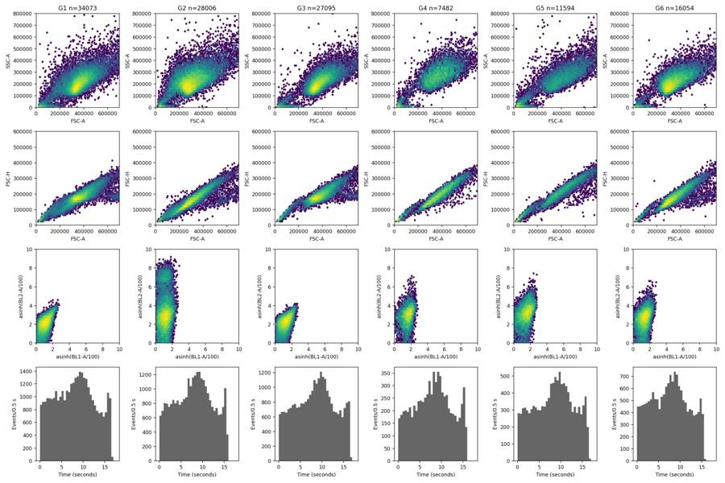
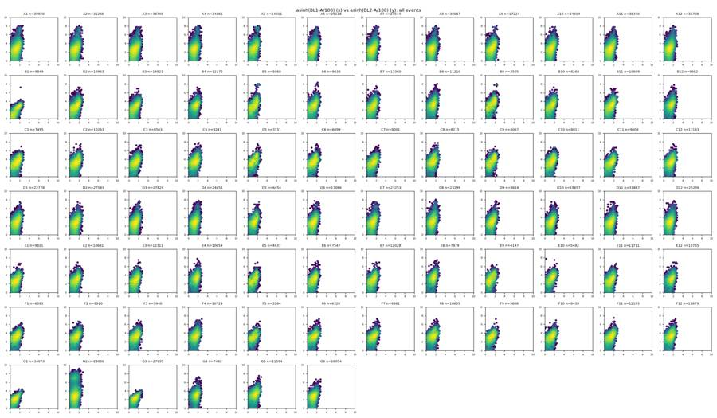
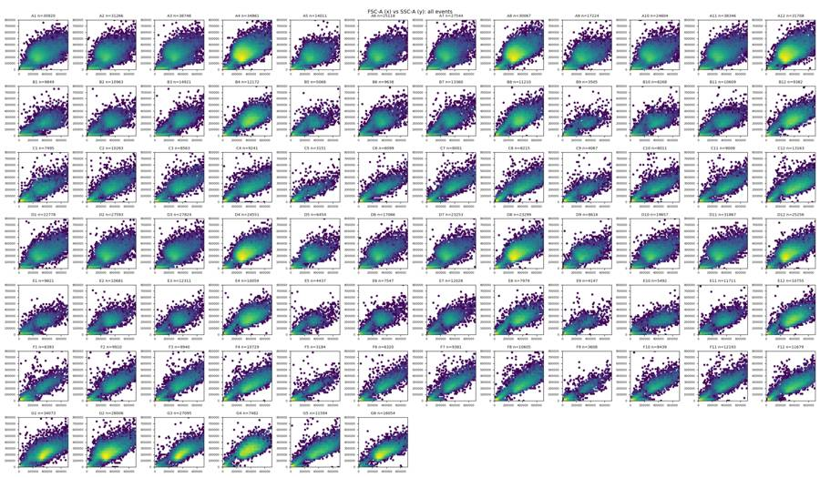
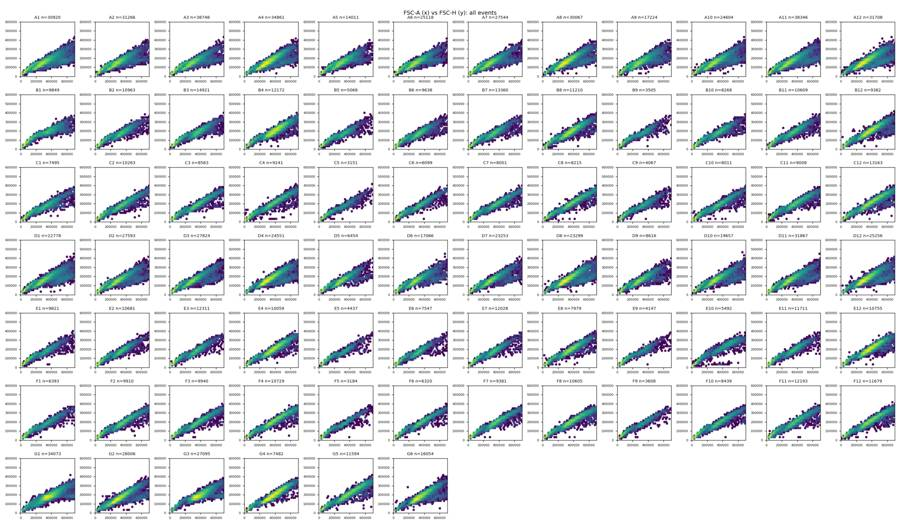
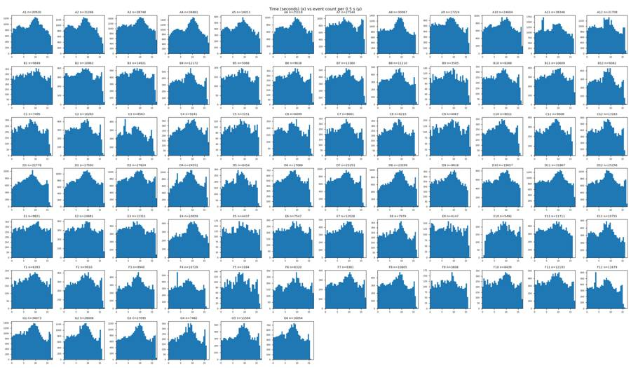
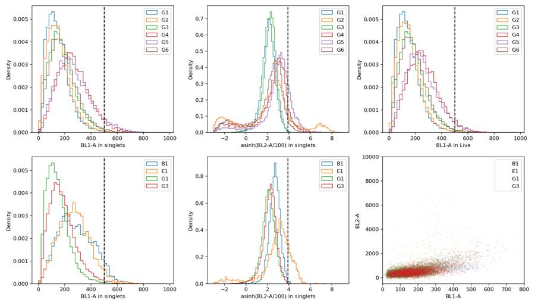
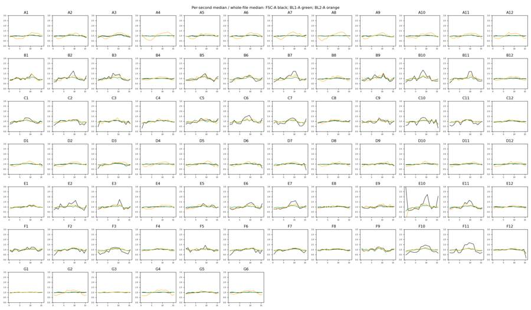
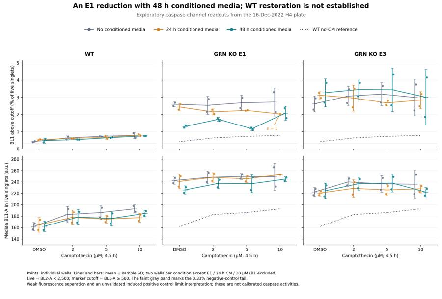
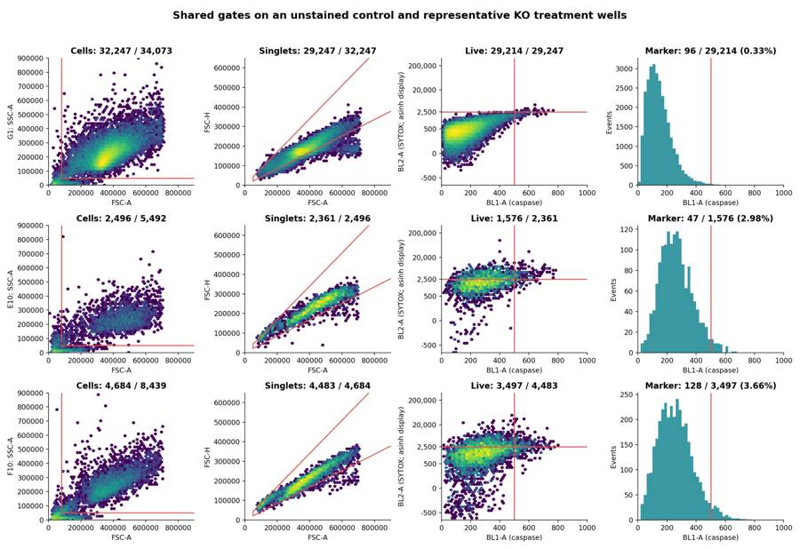
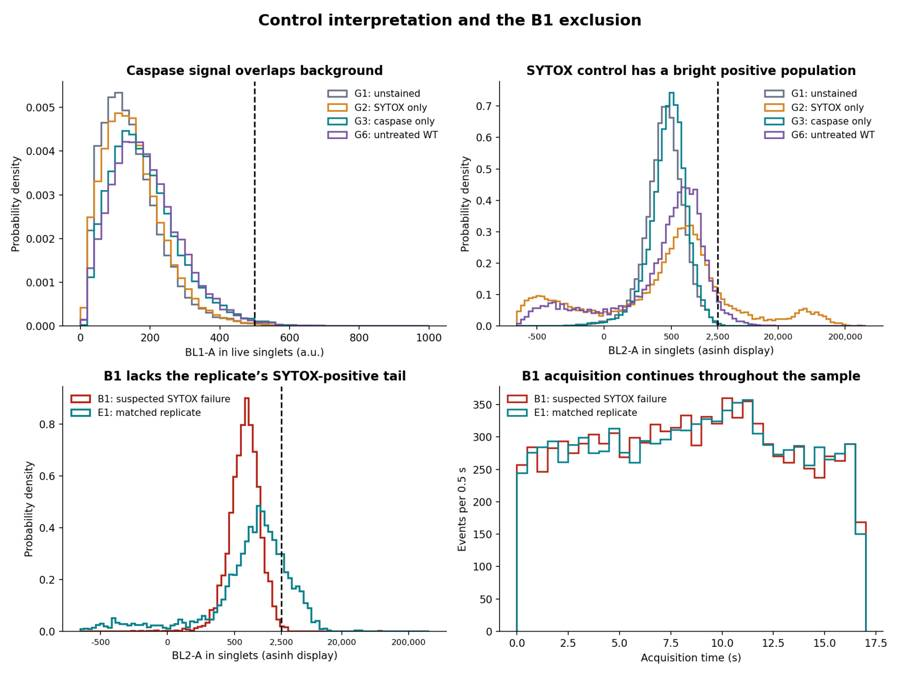

B1_flowkit · GPT-6 Astra · attempt nwTK5Xw
Batch fk1 · job fk1_B_base_conditioned_media_flowkit_gpt-6-astra · trial B_base_conditioned_media_flowkit__nwTK5Xw. Long tool outputs are cut at 6,000 characters.
Score
0.42
0.42
Minutes
10.9
10.9
Agent cost
$3.71
$3.71
Steps
24
24
Screenshots / images
10
10
1
task prompt (instruction.md)
<environment_context> <cwd>/task</cwd> <shell>bash</shell> <current_date>2026-11-10</current_date> <timezone>Etc/UTC</timezone> <filesystem><workspace_roots><root>/task</root></workspace_roots><permission_profile type="disabled"><file_system type="unrestricted" /></permission_profile></filesystem> </environment_context>
2
user message
# Conditioned-media caspase plate (16-Dec-2022): analyse, conclude, decide
You are the analyst for this experiment: analyse the plate, answer the plan's question, and recommend the next step.
## Inputs (read-only)
| path | content |
|---|---|
| `/task/inputs/plan.md` | Notebook plan for this run: purpose, rationale, reagents, protocol, plate maps, cytometer settings |
| `/task/inputs/plate_layout.csv` | One row per FCS file: `file, well, sample, cell_line, camptothecin, conditioned_media` (plate-map wording) |
| `/task/inputs/raw/` | 78 FCS 3.1 files (Thermo Attune NxT, acquired 16-Dec-2022), wells A1–F12 and G1–G6 |
## Environment
- **Network.** None.
## Channels
Channel names are the labels stored inside the FCS files ($PnS). They may be out of date. Use the plan's reagent list and cytometer settings to decide what each detector measured.
| detector | Name in the FCS file (`$PnS`) |
|---|---|
| FSC-A / FSC-H / FSC-W | FSC-A / FSC-H / FSC-W |
| SSC-A / SSC-H / SSC-W | SSC-A / SSC-H / SSC-W |
| BL1-A / BL1-H / BL1-W | AAV-GFP-GFP-A / AAV-GFP-GFP-H / AAV-GFP-GFP-W |
| BL2-A / BL2-H / BL2-W | AAdvanced livedead-A / AAdvanced livedead-H / AAdvanced livedead-W |
| Time | Time |
## Deliverables (all in `/task/outputs/`)
### 1. `gates.xml`
- Your gating strategy as GatingML 2.0, written with `flowkit.export_gatingml` (see *Software*). It must load with `flowkit.parse_gating_xml("/task/outputs/gates.xml")`.
- Every population in `counts.csv` except `all_events` must be a gate in this file with exactly the same name.
- These gates must be the ones that produced `counts.csv`.
### 2. `counts.csv`
Columns, in order: `file, well, population, role, parent, count, pct_of_parent`.
**Rows**
- One row per FCS file × population, covering all 78 files.
- Every file has the same population set.
**Columns**
- `file`: exact FCS file name. `well`: as in `plate_layout.csv`.
- `population`: your gate names (no commas). Each file also has one row with `population` = `all_events`, `role` = `other`, `parent` = `none`, `count` = total events and `pct_of_parent` empty.
- `role` ∈ {`cells`, `singlets`, `live`, `marker_positive`, `other`}.
- Each of `cells`, `singlets`, `live` and `marker_positive` is used by exactly one population, the same population in every file.
- `other` may be used by any number of populations.
- `parent`: the parent population's name (another population of the same file, or `all_events`). Use `none` only for `all_events`.
- `count`: integer number of events in the population.
- `pct_of_parent`: 100 × count / parent count.
### 3. `flags.csv`
Columns, in order: `file, well, issue_type, evidence, decision`. Exactly one row per FCS file (78 rows).
- Flag any well whose data should not be used, with evidence.
- `issue_type` ∈ {`none`, `clog`, `ran_dry`, `too_few_events`, `saturation`, `bad_control`, `mislabel`, `other`}. If a well has several issues, give the main one here and describe the rest in `evidence`.
- `evidence`: required unless `issue_type` = `none`. It must cite at least one number taken from the data.
- `decision` ∈ {`keep`, `keep_with_note`, `exclude`}.
- Wells marked `exclude` must appear in `answer.json` → `excluded_wells` and must not be used in `condition_summary.csv`.
### 4. `condition_summary.csv`
Columns, in order: `condition, wells, n_wells_used, mean, sd, metric_definition, normalisation_applied`. One row per condition you define.
- `condition`: your name for the condition. Names must be unique and contain no commas.
- `wells`: the plate wells used, separated by `;` (e.g. `X1;X2`).
- `n_wells_used`: integer, equal to the number of wells listed.
- `mean`, `sd`: computed across the listed wells, in the units of your metric. Leave `sd` empty when `n_wells_used` = 1.
- `metric_definition`: which population counts form the numerator and the denominator, or another exact definition.
- `normalisation_applied`: `none`, or the exact formula used.
### 5. `figure.png`
The main result chart.
### 6. `report.md`
These headings, in this order: `## Question`, `## Methods`, `## Results`, `## Conclusion`, `## Caveats`, `## Recommendation`.
### 7. `answer.json`
```
{"question": str,
"comparisons": [{"comparison": str, "a": <condition>, "b": <condition>,
"direction": "increase"|"decrease"|"no_clear_change",
"magnitude": str, "confidence": "high"|"medium"|"low"}],
"overall_answer": "yes: ..." | "partial: ..." | "no: ...",
"assay_verdict": "fit_for_purpose"|"needs_optimisation"|"not_fit_for_purpose",
"next_action": <ACTION>,
"next_change": {"what": str, "from": str, "to": str, "why": str},
"excluded_wells": [well IDs],
"caveats": [str]}
```
- `comparisons`: at least one comparison.
- `a` and `b` must be `condition` values from `condition_summary.csv`.
- `direction` describes `a` relative to `b` (`increase` = a higher than b).
- `magnitude` states the size of the difference, with a number.
- `overall_answer` must start with `yes:`, `partial:` or `no:`.
- `next_action` ∈ {`proceed_as_planned`, `repeat_unchanged`, `repeat_with_change`, `optimise_reagent_or_setting`, `change_treatment_or_timing`, `switch_assay`, `stop`}.
- `next_change`: the change you recommend, as an object: `what` (the step, reagent or condition to change), `from` (its value as run), `to` (the value you recommend) and `why`. Use empty strings if you recommend no change.
- `excluded_wells`: well IDs (e.g. `G1`) that have `decision` = `exclude` in `flags.csv`. Use `[]` if there are none.
## Constraints
- Time budget: 5 hours.
- Do not modify anything in `/task/inputs/`.
## Software (FlowKit version of this task)
- **Python 3 with FlowKit 1.2.3** (plus flowio, numpy, pandas, scipy, matplotlib, openpyxl) is installed. There is no graphical analysis program.
- **Load** each file with `flowkit.Sample(path)`. Build **one** `flowkit.GatingStrategy` for all wells, with `flowkit.Dimension` and `flowkit.gates.RectangleGate`, `PolygonGate` or `EllipsoidGate` (no quadrant or Boolean gates).
- **Gate names** must be valid XML IDs: letters, digits and underscores, starting with a letter (no spaces or `+`).
- **One gate per reported population**, named exactly as the population and nested under its parent population (the first population's gate sits at the root). A population's events are its own gate within its parent.
- **Compensation.** Your choice. Every gate dimension must state its `compensation_ref` (`"uncompensated"`, `"FCS"` for the file's own spillover matrix, or the id of a matrix you add to the strategy).
- **Channels.** FlowKit gate dimensions use the detector ID (`$PnN`, e.g. `BL1-A`), not the text label.
- **Transforms.** You may draw gates on transformed axes (for example `flowkit.transforms.LogicleTransform`, added with `add_transform` and referenced by `transformation_ref`).
- **Save** the strategy with `flowkit.export_gatingml(strategy, open("/task/outputs/gates.xml", "wb"))` and check that it reloads with `flowkit.parse_gating_xml`.
- **Counts.** `counts.csv` must be the counts these saved gates give on each file (`strategy.gate_sample(sample)`), with no per-well changes.
- **Looking at data.** Save plots as PNG files and open the image files to view them.
---
## How you work
You work in a **terminal** (bash, working directory `/task`).
- **Inputs** are in `/task/inputs/` (read-only). **Write every deliverable to `/task/outputs/`.** Only that folder is collected for grading.
- **Limits.** There is no limit on the number of actions; the only limit is the time budget above. Save `gates.xml` and your output files early and often.
3
agent
I’ll read the plan, inspect the plate controls and acquisition quality, then apply one shared gating strategy to all 78 files. I’ll save the gates, counts, QC evidence, result chart and recommendation in `/task/outputs/`.
tool call · exec
const r = await tools.exec_command({cmd:"pwd && rg --files -g 'AGENTS.md' -g '!inputs/raw/**' /task /installed-agent 2>/dev/null | head -80",max_output_tokens:3000});text(r.output);
text(await tools.exec_command({cmd:"cat /task/inputs/plan.md",max_output_tokens:16000}));
text(await tools.exec_command({cmd:"head -25 /task/inputs/plate_layout.csv",max_output_tokens:4000}));
text(await tools.exec_command({cmd:"python -c \"import flowkit as fk; print(fk.__version__); import inspect; print(inspect.signature(fk.Sample)); print(inspect.signature(fk.Dimension)); print(inspect.signature(fk.gates.PolygonGate)); print(inspect.signature(fk.gates.RectangleGate))\"",max_output_tokens:4000}));
tool output
Script completed
Wall time 2.5 seconds
Output:
/task
{"chunk_id":"1fc989","wall_time_seconds":0.000003514,"exit_code":0,"original_token_count":1149,"output":"# Plan: Caspase activity assay development with progranulin conditioned media (H4 cells)\n\nSource: lab notebook entry (target PGRN; assay development; cell-based; flow; cell type H4). This plan covers the plate acquired on 16-Dec-2022. People's names, and all text written after acquisition, have been removed.\n\n## Purpose\nTo determine if progranulin conditioned media can restore wild-type levels of caspase activity in H4 GRN KO cells.\n\n## Rationale\nPrevious literature evidence suggests that applying exogenous progranulin to cells can restore molecular phenotypes in progranulin deficient lines. Our previous experiment with caspase activity on H4 GRN WT and KO cells showed that GRN KO lines had increased caspase activity. This difference was enhanced after campothesin challenge in both GRN WT and KO cells. In this experiment, we will determine if applying conditioned media from WT cell lines onto KO lines can reduce caspase activity closer to WT levels.\n\n## Materials\n- H4 WT cells\n- H4 PGRN KO E1\n- H4 PGRN KO E3\n- H4 media (DMEM + 10% FBS)\n- CellEvent Caspase-3/7 Green Flow Cytometry Assay Kit\n- SYTOX AAdvanced Dead Cell Stain\n- Camptothecin\n\n## Protocol\n\n### 2022-12-12: conditioned-media donor plate\n- Passage WT H4 cells into 96 well plate (10K/well). This plate is the one the media is collected from.\n\nDonor plate map, as written (12 columns per line):\n\n```\nWT WT WT WT WT WT WT WT WT WT WT WT\nWT WT WT WT WT WT WT WT WT WT WT WT\nWT WT WT WT WT WT WT WT WT WT WT WT\n24hr\nWT WT WT WT WT WT WT WT WT WT WT WT\nWT WT WT WT WT WT WT WT WT WT WT WT\nWT WT WT WT WT WT WT WT WT WT WT WT\n48hr\n```\n\nRed = 24 hr media collection; Purple = 48hr media collection. Cell colours of this map were not preserved in the export.\n\n### 2022-12-13\n2. Collect media from 24hr wells\n3. Spin down at 2000xg for 10min @4C and collect into fresh plate\n\n### 2022-12-14\n4. Collect media from 48hr wells\n5. Spin down at 2000xg for 10min. Collect into fresh plate\n- Passage all H4 lines into 96 well plate for assay (10K/well) according to the assay plate map below.\n\n### Assay plate map\nThe map is as written. Row letters A–H and column numbers 1–12 have been added for orientation.\n\n| | 1 | 2 | 3 | 4 | 5 | 6 | 7 | 8 | 9 | 10 | 11 | 12 |\n|---|---|---|---|---|---|---|---|---|---|---|---|---|\n| A | WT 10uM | WT 5uM | WT 2uM | WT DMSO | WT 10uM | WT 5uM | WT 2uM | WT DMSO | WT 10uM | WT 5uM | WT 2uM | WT DMSO |\n| B | E1 10uM | E1 5uM | E1 2uM | E1 DMSO | E1 10uM | E1 5uM | E1 2uM | E1 DMSO | E1 10uM | E1 5uM | E1 2uM | E1 DMSO |\n| C | E3 10uM | E3 5uM | E3 2uM | E3 DMSO | E3 10uM | E3 5uM | E3 2uM | E3 DMSO | E3 10uM | E3 5uM | E3 2uM | E3 DMSO |\n| D | WT 10uM | WT 5uM | WT 2uM | WT DMSO | WT 10uM | WT 5uM | WT 2uM | WT DMSO | WT 10uM | WT 5uM | WT 2uM | WT DMSO |\n| E | E1 10uM | E1 5uM | E1 2uM | E1 DMSO | E1 10uM | E1 5uM | E1 2uM | E1 DMSO | E1 10uM | E1 5uM | E1 2uM | E1 DMSO |\n| F | E3 10uM | E3 5uM | E3 2uM | E3 DMSO | E3 10uM | E3 5uM | E3 2uM | E3 DMSO | E3 10uM | E3 5uM | E3 2uM | E3 DMSO |\n| G | WT no treatment (no stain) | WT L/D only | WT Caspase only | E1 untreated | E3 untreated | WT untreated | | | | | | |\n| H | 24hr conditioned media | | | | 48hr conditoned media | | | | No condtioned media | | | |\n\nCell colours in the notebook:\n- Rows A–F, columns 1–4: blue (#94B5DD).\n- Rows A–F, columns 5–8: green (#D5F0AD).\n- Rows A–F, columns 9–12: uncoloured.\n- Row G: uncoloured.\n- Row H: \"24hr conditioned media\" is blue; \"48hr conditoned media\" is green; \"No condtioned media\" is uncoloured.\n\n### 2022-12-15\n6. Rinse wells with DMEM and then add conditioned media\n\n### 2022-12-16\n7. Add camptothecin to wells at indicated dose. Incubate for 4.5hr\n8. Run flow\n\n### Staining and acquisition (assay protocol as written in this entry)\n- Aspirate media and wash with PBS\n- Add 150uL trypsin incubate for 5min\n- Add 75uL FBS and collect into 96w round bottom plate\n- spin down 200xg for 5min\n- Add 200uL of Cell Event Caspase 3/7 Detection reagent (1:1000) in flow staining buffer. Incubate for 30min at 37C\n- Prepare SYTOX AAdvanced Dead Cell Stain at 100uM concentration by adding 1000uL DMSO to stain. Mix well\n- During the final 5 minutes of 30min Caspase incubation add 2uL of the 100uM Dead Cell stain (final concentration of 1uM)\n- Analyze the samples without fixing.\n\nFlow cytometer settings: FSC-20; SSC-290; BL1 (caspase)-225, BL2 (AAddvanced Dead Cell Stain)-350\n\n## Acquisition\n- Instrument: Thermo Attune NxT.\n- Date: 16-Dec-2022.\n- Files: 78 FCS files, one per well (A1–F12 and G1–G6).\n"}
{"chunk_id":"88d908","wall_time_seconds":0.000003652,"exit_code":0,"original_token_count":524,"output":"file,well,sample,cell_line,camptothecin,conditioned_media\nCaspase-assay-2-mlk(1)_caspase_Group_A1.fcs,A1,WT 10uM,WT,10uM,24hr conditioned media\nCaspase-assay-2-mlk(1)_caspase_Group_A2.fcs,A2,WT 5uM,WT,5uM,24hr conditioned media\nCaspase-assay-2-mlk(1)_caspase_Group_A3.fcs,A3,WT 2uM,WT,2uM,24hr conditioned media\nCaspase-assay-2-mlk(1)_caspase_Group_A4.fcs,A4,WT DMSO,WT,DMSO,24hr conditioned media\nCaspase-assay-2-mlk(1)_caspase_Group_A5.fcs,A5,WT 10uM,WT,10uM,48hr conditioned media\nCaspase-assay-2-mlk(1)_caspase_Group_A6.fcs,A6,WT 5uM,WT,5uM,48hr conditioned media\nCaspase-assay-2-mlk(1)_caspase_Group_A7.fcs,A7,WT 2uM,WT,2uM,48hr conditioned media\nCaspase-assay-2-mlk(1)_caspase_Group_A8.fcs,A8,WT DMSO,WT,DMSO,48hr conditioned media\nCaspase-assay-2-mlk(1)_caspase_Group_A9.fcs,A9,WT 10uM,WT,10uM,No conditioned media\nCaspase-assay-2-mlk(1)_caspase_Group_A10.fcs,A10,WT 5uM,WT,5uM,No conditioned media\nCaspase-assay-2-mlk(1)_caspase_Group_A11.fcs,A11,WT 2uM,WT,2uM,No conditioned media\nCaspase-assay-2-mlk(1)_caspase_Group_A12.fcs,A12,WT DMSO,
… [1,641 more characters not shown]tool call · exec
const results = await Promise.allSettled([
tools.exec_command({cmd:"ls -la /task && ls -la /task/inputs && du -sh /task/inputs/raw && tail -8 /task/inputs/plate_layout.csv",max_output_tokens:4000}),
tools.exec_command({cmd:"python - <<'PY'\nimport flowkit as fk, pathlib, inspect\np=next(pathlib.Path('/task/inputs/raw').glob('*G1.fcs'))\ns=fk.Sample(p)\nprint(s)\nprint(s.channels.to_string(index=False))\nprint(s.metadata)\nprint('event ranges',s.get_events(source='raw').min(axis=0), s.get_events(source='raw').max(axis=0))\nprint('gate_sample',inspect.signature(fk.GatingStrategy.gate_sample))\nprint('Matrix',inspect.signature(fk.Matrix))\nprint('export',inspect.signature(fk.export_gatingml))\nprint('get_gate_count',inspect.signature(fk._models.gating_results.GatingResults.get_gate_count))\nprint('LogicleTransform',inspect.signature(fk.transforms.LogicleTransform))\nPY",max_output_tokens:10000})
]);for(let i=0;i<results.length;i++)text({i,result:results[i]});
tool output
Script completed
Wall time 1.1 seconds
Output:
{"i":0,"result":{"status":"fulfilled","value":{"chunk_id":"6f8450","wall_time_seconds":0.000004209,"exit_code":0,"original_token_count":291,"output":"total 16\ndrwxr-xr-x 4 root root 4096 Nov 10 16:59 .\ndrwxr-xr-x 21 root root 4096 Nov 10 17:08 ..\ndr-xr-xr-x 3 root root 4096 Nov 10 16:58 inputs\ndrwxr-xr-x 2 root root 4096 Nov 10 16:59 outputs\ntotal 28\ndr-xr-xr-x 3 root root 4096 Nov 10 16:58 .\ndrwxr-xr-x 4 root root 4096 Nov 10 16:59 ..\n-r--r--r-- 1 root root 4596 Nov 10 16:58 plan.md\n-r--r--r-- 1 root root 6691 Nov 10 16:58 plate_layout.csv\ndr-xr-xr-x 2 root root 4096 Nov 10 16:58 raw\n58M\t/task/inputs/raw\nCaspase-assay-2-mlk(1)_caspase_Group_F11.fcs,F11,E3 2uM,E3,2uM,No conditioned media\nCaspase-assay-2-mlk(1)_caspase_Group_F12.fcs,F12,E3 DMSO,E3,DMSO,No conditioned media\nCaspase-assay-2-mlk(1)_caspase_Group_G1.fcs,G1,WT no treatment (no stain),WT,no treatment,not stated\nCaspase-assay-2-mlk(1)_caspase_Group_G2.fcs,G2,WT L/D only,WT,not stated,not stated\nCaspase-assay-2-mlk(1)_caspase_Group_G3.fcs,G3,WT Caspase only,WT,not stated,not stated\nCaspase-assay-2-mlk(1)_caspase_Group_G4.fcs,G4,E1 untreated,E1,untreated,not stated\nCaspase-assay-2-mlk(1)_caspase_Group_G5.fcs,G5,E3 untreated,E3,untreated,not stated\nCaspase-assay-2-mlk(1)_caspase_Group_G6.fcs,G6,WT untreated,WT,untreated,not stated\n"}}}
{"i":1,"result":{"status":"fulfilled","value":{"chunk_id":"ea0aec","wall_time_seconds":0.962241577,"exit_code":0,"original_token_count":1310,"output":"Sample(v3.1, G1.fcs, 13 channels, 34073 events)\n channel_number pnn pns png pne pnr\n 1 Time Time 1.0 (0.0, 0.0) 67108864.0\n 2 FSC-A FSC-A 1.0 (0.0, 0.0) 1048576.0\n 3 SSC-A SSC-A 1.0 (0.0, 0.0) 1048576.0\n 4 BL1-A AAV-GFP-GFP-A 1.0 (0.0, 0.0) 1048576.0\n 5 BL2-A AAdvanced livedead-A 1.0 (0.0, 0.0) 1048576.0\n 6 FSC-H FSC-H 1.0 (0.0, 0.0) 1048576.0\n 7 SSC-H SSC-H 1.0 (0.0, 0.0) 1048576.0\n 8 BL1-H AAV-GFP-GFP-H 1.0 (0.0, 0.0) 1048576.0\n 9 BL2-H AAdvanced livedead-H 1.0 (0.0, 0.0) 1048576.0\n 10 FSC-W FSC-W 1.0 (0.0, 0.0) 1024.0\n 11 SSC-W SSC-W 1.0 (0.0, 0.0) 1024.0\n 12 BL1-W AAV-GFP-GFP-W 1.0 (0.0, 0.0) 1024.0\n 13 BL2-W AAdvanced livedead-W 1.0 (0.0, 0.0) 1024.0\n{'par': '13', 'tot': '34073', 'mode': 'L', 'datatype': 'F', 'byteord': '1,2,3,4', 'p1f': 'NA', 'p1l': 'NA', 'p1s': 'Time', 'p1v': 'NA', 'p1n': 'Time', 'p1b': '32', 'p1r': '67108864', 'p1e': '0,0', 'p2f': 'NA', 'p2l': '488', 'p2s': 'FSC-A', 'p2v': '20', 'p2n': 'FSC-A', 'p2b': '32', 'p2r': '1048576', 'p2e': '0,0', 'p3f': 'NA', 'p3l': '488', 'p3s': 'SSC-A', 'p3v': '290', 'p3n': 'SSC-A', 'p3b': '32', 'p3r': '1048576', 'p3e': '0,0', 'p4f': 'NA', 'p4l': '488', 'p4s': 'AAV-GFP-GFP-A', 'p4v': '225', 'p4n': 'BL1-A', 'p4b': '32', 'p4r': '1048576', 'p4e': '0,0', 'p5f': 'NA', 'p5l': '488', 'p5s': 'AAdvanced livedead-A', 'p5v': '350', 'p5n': 'BL2-A', 'p5b': '32', 'p5r': '1048576', 'p5e': '0,0', 'p6f': 'NA', 'p6l': '488', 'p6s': 'FSC-H', 'p6v': '20', 'p6n': 'FSC-H', 'p6b': '32', 'p6r': '1048576', 'p6e': '0,0', 'p7f': 'NA', 'p7l': '488', 'p7s': 'SSC-H', 'p7v': '290', 'p7n': 'SSC-H', 'p7b': '32', 'p7r': '1048576', 'p7e': '0,0', 'p8f': 'NA', 'p8l': '488', 'p8s': 'AAV-GFP-GFP-H', 'p8v': '225', 'p8n': 'BL1-H', 'p8b': '32', 'p8r': '1048576', 'p8e': '0,0', 'p9f': 'NA', 'p9l': '488', 'p9s': 'AAdvanced livedead-H', 'p9v': '350', 'p9n': 'BL2-H', 'p9b': '32', 'p9r': '1048576', 'p9e': '0,0', 'p10f': 'NA', 'p10l': '488', 'p10s': 'FSC-W', 'p10v': '20', 'p10n': 'FSC-W', 'p10b': '32', 'p10r': '1024', 'p10e': '0,0', 'p11f': 'NA', 'p11l': '488', 'p11s': 'SSC-W', 'p11v': '290', 'p11n': 'SSC-W', 'p11b': '32', 'p11r': '1024', 'p11e': '0,0', 'p12f': 'NA', 'p12l': '488', 'p12s': 'AAV-GFP-GFP-W', 'p12v': '225', 'p12n': 'BL1-W', 'p12b': '32', 'p12r': '1024', 'p12e': '0,0', 'p13f': 'NA', 'p13l': '488', 'p13s': 'AAdvanced livedead-W', 'p13v': '350', 'p13n': 'BL2-W', 'p13b': '32', 'p13r': '1024', 'p13e': '0,0', 'cyt': '0A29009 Attune NxT Acoustic Focusing Cytometer (Lasers: BRV6Y)', 'sys': 'SEA11065ATTUNE Microsoft Windows 10 Enterprise LTSC', 'spillover': '6,BL1-A,BL2-A,BL1-H,BL2-H,BL1-W,BL2-W,1.000000,0.000000,0.000000,0.000000,0.000000,0.000000,0.000000,1.000000,0.000000,0.000000,0.000000,0.000000,0.000000,0.000000,1.000000,0.000000,0.000000,0.000000,0.000000,0.000000,0.000000,1.000000,0.000000,0.000000,0.000000,0.000000,0.000000,0.000000,1.000000,0.000000,0.000000,0.000000,0.000000,0.000000,0.000000,1.000000', 'btim': '15:20:00', 'cells': 'NA', 'com': 'NA', 'cytsn': '2AFC228071019', 'date': '16-Dec-2022', 'etim': '15:20:17', 'exp': 'NA', 'fil': 'G1.fcs', 'inst': 'NA', 'originality': 'Original', 'lost': '0', 'op': 'Jeff Huang', 'plateid': 'NA', 'platename': 'Caspase-assay-2-mlk(1)', 'proj': 'caspase', 'smno': 'Group', 'src': 'NA', 'timestep': '0.001', 'vol': '140000', 'wellid': 'G1', '#coincidentcount': '890', '#flowrate': '500', '#laser1asf': '1.07', '#laser1color': 'Blue', '#laser1delay': '1100', '#laser2asf': '1.09', '#laser2color': 'Red', '#laser2delay': '1516', '#laser3asf': '1.04', '#laser3color': 'Violet', '#laser3delay': '702', '#laser4asf': '1.00', '#laser4color': 'Yellow', '#laser4delay': '273', '#laserconfig': 'BRV6Y', '#p12label': 'GFP', '#p12target': 'AAV-GFP', '#p13target': 'AAdvanced livedead', '#p1label': 'NA', '#p1target': 'NA', '#p4label': 'GFP', '#p4target': 'AAV-GFP', '#p5target': 'AAdvanced livedead', '#p8label': 'GFP', '#p8target': 'AAV-GFP', '#p9target': 'AAdvanced livedead', '#ptdate': '16-Dec-2022', '#ptresult': 'Pass', '#tr1': 'OR_FSC,25000', '#widththreshold': '1000', '#winext': '0', 'hostid': 'SEA11065ATTUNE', 'begindata': '000000008192', 'enddata': '000001779987', 'nex
… [805 more characters not shown]5
agent
The plan identifies BL1 as the CellEvent caspase-3/7 signal and BL2 as the SYTOX dead-cell signal; the GFP label is stale. Each cell line has two wells per media × camptothecin condition. I’ll keep those well-level replicates visible and use G1–G3 to assess fluorescence background and spillover.
tool call · exec
text(await tools.exec_command({cmd:"mkdir -p /task/outputs && cat > /task/outputs/explore.py <<'PY'\nfrom pathlib import Path\nimport flowkit as fk\nimport numpy as np\nimport pandas as pd\nimport matplotlib\nmatplotlib.use('Agg')\nimport matplotlib.pyplot as plt\nfrom matplotlib.colors import LogNorm\n\nOUT=Path('/task/outputs')\nlayout=pd.read_csv('/task/inputs/plate_layout.csv')\nS={}; E={}; rows=[]\nfor r in layout.itertuples(index=False):\n s=fk.Sample('/task/inputs/raw/'+r.file)\n x=s.get_events(source='raw')\n S[r.well]=s; E[r.well]=x\n row={'file':r.file,'well':r.well,'events':len(x),'time_min':x[:,0].min(),'time_max':x[:,0].max(),'start':s.metadata['btim'],'end':s.metadata['etim'],'lost':s.metadata.get('lost'),'coincident':s.metadata.get('#coincidentcount'),'well_metadata':s.metadata.get('wellid')}\n for i,ch in enumerate(s.pnn_labels):\n for q,v in zip([0,1,5,25,50,75,95,99,100],np.percentile(x[:,i],[0,1,5,25,50,75,95,99,100])):row[f'{ch}_p{q}']=v\n row[f'{ch}_at_upper_range']=np.mean(x[:,i]>=float(s.channels.iloc[i].pnr)-1)*100\n bins=np.linspace(0,max(17,x[:,0].max()),18)\n h=np.histogram(x[:,0],bins=bins)[0]\n for i,n in enumerate(h):row[f'time_bin{i+1}']=n\n rows.append(row)\npd.DataFrame(rows).to_csv(OUT/'qc_initial.csv',index=False)\nplt.rcParams.update({'font.size':9})\nfig,axs=plt.subplots(4,6,figsize=(18,12))\nfor c,w in enumerate(['G1','G2','G3','G4','G5','G6']):\n x=E[w]\n axs[0,c].hexbin(x[:,1],x[:,2],gridsize=65,bins='log',mincnt=1,extent=(0,700000,0,800000))\n axs[0,c].set(xlim=(0,700000),ylim=(0,800000),title=f'{w} n={len(x)}',xlabel='FSC-A',ylabel='SSC-A')\n axs[1,c].hexbin(x[:,1],x[:,5],gridsize=65,bins='log',mincnt=1,extent=(0,700000,0,600000))\n axs[1,c].set(xlim=(0,700000),ylim=(0,600000),xlabel='FSC-A',ylabel='FSC-H')\n axs[2,c].hexbin(np.arcsinh(x[:,3]/100),np.arcsinh(x[:,4]/100),gridsize=65,bins='log',mincnt=1,extent=(0,10,0,10))\n axs[2,c].set(xlim=(0,10),ylim=(0,10),xlabel='asinh(BL1-A/100)',ylabel='asinh(BL2-A/100)')\n axs[3,c].hist(x[:,0],bins=np.arange(0,18,.5),color='0.4')\n axs[3,c].set(xlabel='Time (seconds)',ylabel='Events/0.5 s')\nfig.tight_layout();fig.savefig(OUT/'qc_controls_initial.png',dpi=140);plt.close(fig)\nfor kind in ['scatter','singlet','fluorescence','time']:\n fig,axs=plt.subplots(7,12,figsize=(24,14))\n for ax in axs.flat:ax.set_visible(False)\n for r in layout.itertuples(index=False):\n x=E[r.well];ax=axs[ord(r.well[0])-65,int(r.well[1:])-1];ax.set_visible(True)\n if kind=='scatter':\n ax.hexbin(x[:,1],x[:,2],gridsize=32,bins='log',mincnt=1,extent=(0,700000,0,800000));ax.set(xlim=(0,700000),ylim=(0,800000))\n elif kind=='singlet':\n ax.hexbin(x[:,1],x[:,5],gridsize=32,bins='log',mincnt=1,extent=(0,700000,0,600000));ax.set(xlim=(0,700000),ylim=(0,600000))\n elif kind=='fluorescence':\n ax.hexbin(np.arcsinh(x[:,3]/100),np.arcsinh(x[:,4]/100),gridsize=32,bins='log',mincnt=1,extent=(0,10,0,10));ax.set(xlim=(0,10),ylim=(0,10))\n else:\n ax.hist(x[:,0],bins=np.arange(0,18,.5));ax.set(xlim=(0,17))\n ax.set_title(f'{r.well} n={len(x)}',fontsize=8)\n ax.tick_params(labelsize=6)\n fig.suptitle({'scatter':'FSC-A (x) vs SSC-A (y): all events','singlet':'FSC-A (x) vs FSC-H (y): all events','fluorescence':'asinh(BL1-A/100) (x) vs asinh(BL2-A/100) (y): all events','time':'Time (seconds) (x) vs event count per 0.5 s (y)'}[kind])\n fig.tight_layout();fig.savefig(OUT/f'qc_plate_{kind}.png',dpi=130);plt.close(fig)\nprint(pd.DataFrame(rows)[['well','events','time_max','BL1-A_p50','BL1-A_p99','BL2-A_p50','BL2-A_p99','BL1-A_at_upper_range','BL2-A_at_upper_range']].to_string(index=False))\nPY\npython /task/outputs/explore.py",yield_time_ms:1000,max_output_tokens:2000}));
tool output
Script completed
Wall time 1.2 seconds
Output:
{"chunk_id":"b0b78f","wall_time_seconds":1.001124532,"session_id":47695,"original_token_count":0,"output":""}tool call · exec
const results = await Promise.allSettled([
tools.exec_command({cmd:"python - <<'PY'\nimport flowkit as fk,inspect\nprint(inspect.getsource(fk.Matrix.__init__))\nprint(inspect.signature(fk.GatingStrategy.add_gate))\nprint(inspect.signature(fk.GatingStrategy.add_comp_matrix))\nprint(inspect.signature(fk.GatingStrategy.get_gate_hierarchy))\nprint(inspect.getsource(fk._models.gating_results.GatingResults.get_gate_membership))\nPY",max_output_tokens:6000}),
tools.write_stdin({session_id:47695,chars:"",yield_time_ms:1000,max_output_tokens:6500})
]);for(let i=0;i<results.length;i++)text({i,result:results[i]});
tool output
Script completed
Wall time 5.0 seconds
Output:
{"i":0,"result":{"status":"fulfilled","value":{"chunk_id":"4ecc84","wall_time_seconds":0.992791463,"exit_code":0,"original_token_count":819,"output":" def __init__(\n self,\n spill_data_or_file,\n detectors,\n fluorochromes=None,\n null_channels=None\n ):\n # Copy detectors b/c it may be modified\n detectors = copy(detectors)\n\n # TODO: accept the same CSV w/ headers that is exported & take Pandas DataFrame\n\n if isinstance(spill_data_or_file, np.ndarray):\n spill = spill_data_or_file\n else:\n spill = flowutils.compensate.parse_compensation_matrix(\n spill_data_or_file,\n detectors,\n null_channels=null_channels\n )\n spill = spill[1:, :]\n\n self.matrix = spill\n\n # Remove any null channels from detector list\n if null_channels is not None:\n for nc in null_channels:\n if nc in detectors:\n detectors.remove(nc)\n\n self.detectors = detectors\n\n # TODO: Should we use a different name other than 'fluorochromes'? They are typically antibodies or markers.\n # Note: fluorochromes attribute is required for compatibility with GatingML exports,\n # as the GatingML 2.0 requires both the set of detectors and fluorochromes.\n if fluorochromes is None:\n fluorochromes = ['' for _ in detectors]\n\n self.fluorochromes = fluorochromes\n\n(self, gate, gate_path, sample_id=None)\n(self, matrix_id, matrix)\n(self, output='ascii', **kwargs)\n def get_gate_membership(self, gate_name, gate_path=None):\n \"\"\"\n Retrieve a boolean array indicating gate membership for the events in the GatingResults sample.\n Note, the same gate ID may be found in multiple gate paths, i.e. the gate ID can be ambiguous.\n In this case, specify the full gate path to retrieve gate indices.\n\n :param gate_name: text string of a gate name\n :param gate_path: A tuple of ancestor gate IDs for the given gate ID. Alternatively, a string path delimited\n by forward slashes can also be given, e.g. ('/root/singlets/lymph/live')\n :return: NumPy boolean array (length of sample event count)\n \"\"\"\n gate_paths = self._gate_lut[gate_name]['paths']\n if len(gate_paths) > 1:\n if gate_path is None:\n raise ValueError(\"Gate name %s is ambiguous, specify the full gate path\")\n elif isinstance(gate_path, tuple):\n gate_path = \"/\".join(gate_path)\n else:\n gate_path = gate_paths[0]\n\n # need to check for quadrant gates, as they need to be handled differently\n gate_data = self.report[(self.report['sample'] == self.sample_id) & (self.report.gate_name == gate_name)]\n quad_parent_values = set(gate_data.quadrant_parent.to_list())\n\n if len(quad_parent_values) == 1 and None in quad_parent_values:\n # it's not a quadrant gate\n return self._raw_results[gate_name, gate_path]['events']\n elif len(quad_parent_values) == 1:\n quad_parent = quad_parent_values.pop()\n return self._raw_results[quad_parent, gate_path][gate_name]['events']\n else:\n raise ValueError(\"Report as bug: The gate %s appears to have multiple quadrant parents.\" % gate_name)\n\n"}}}
{"i":1,"result":{"status":"fulfilled","value":{"chunk_id":"dd0028","wall_time_seconds":5.001968544,"session_id":47695,"original_token_count":0,"output":""}}}tool call · exec
const r=await tools.view_image({path:"/task/outputs/qc_controls_initial.png"});image(r.image_url);
tool output
Script completed Wall time 0.0 seconds Output:

tool call · exec
text(await tools.write_stdin({session_id:47695,chars:"",yield_time_ms:1000,max_output_tokens:7000}));
const r=await tools.view_image({path:"/task/outputs/qc_plate_fluorescence.png"});image(r.image_url);
tool output
Script completed Wall time 5.0 seconds Output:
{"chunk_id":"781d9b","wall_time_seconds":5.001363444,"session_id":47695,"original_token_count":0,"output":""}
tool call · exec
const results=await Promise.allSettled([
tools.view_image({path:"/task/outputs/qc_plate_scatter.png"}),
tools.view_image({path:"/task/outputs/qc_plate_singlet.png"}),
tools.exec_command({cmd:"python - <<'PY'\nimport pandas as pd\nq=pd.read_csv('/task/outputs/qc_initial.csv')\nprint(q[['well','events','time_max','BL1-A_p50','BL1-A_p99','BL2-A_p50','BL2-A_p99','BL1-A_at_upper_range','BL2-A_at_upper_range']].to_string(index=False))\nPY",max_output_tokens:8000})
]);for(let i=0;i<results.length;i++){if(results[i].status==='fulfilled'&&results[i].value.image_url)image(results[i].value.image_url);else text({i,result:results[i]})}
tool output
Script completed Wall time 0.4 seconds Output:


{"i":2,"result":{"status":"fulfilled","value":{"chunk_id":"5d83b1","wall_time_seconds":0.175075567,"exit_code":0,"original_token_count":2193,"output":"well events time_max BL1-A_p50 BL1-A_p99 BL2-A_p50 BL2-A_p99 BL1-A_at_upper_range BL2-A_at_upper_range\n A1 30920 16.721 152.0 539.00 418.0 14435.62 0.0 0.0\n A2 31266 16.571 147.0 513.00 365.0 15966.35 0.0 0.0\n A3 38748 16.778 142.0 509.00 327.0 9448.65 0.0 0.0\n A4 34861 16.734 159.0 474.00 403.0 12930.40 0.0 0.0\n A5 14011 16.581 160.0 528.90 522.0 72871.10 0.0 0.0\n A6 25118 16.726 151.0 521.00 439.0 12494.70 0.0 0.0\n A7 27544 16.495 149.0 506.00 409.0 10087.40 0.0 0.0\n A8 30067 15.853 159.0 482.00 468.0 10433.56 0.0 0.0\n A9 17224 16.515 169.0 537.00 524.0 10492.70 0.0 0.0\n A10 24604 16.639 164.0 527.00 518.0 10698.43 0.0 0.0\n A11 38346 16.331 156.0 517.00 439.0 8826.95 0.0 0.0\n A12 31708 16.608 161.0 492.93 565.0 13294.69 0.0 0.0\n B1 9849 16.792 142.0 596.00 242.0 1896.52 0.0 0.0\n B2 10963 16.731 151.0 561.00 502.0 9008.66 0.0 0.0\n B3 14921 16.753 153.0 560.80 477.0 5912.40 0.0 0.0\n B4 12172 16.570 222.0 579.58 893.0 8150.51 0.0 0.0\n B5 5068 16.550 152.0 553.00 664.0 15837.82 0.0 0.0\n B6 9638 16.830 173.0 558.63 677.5 10187.35 0.0 0.0\n B7 13360 16.719 161.0 536.00 572.0 9320.10 0.0 0.0\n B8 11210 16.671 209.0 563.00 987.0 14192.39 0.0 0.0\n B9 3505 16.823 150.0 579.96 837.0 16369.48 0.0 0.0\n B10 8268 16.540 168.0 579.00 697.0 10491.48 0.0 0.0\n B11 10609 16.705 168.0 567.00 640.0 8845.08 0.0 0.0\n B12 9382 16.354 232.0 604.38 1024.0 13613.49 0.0 0.0\n C1 7495 16.445 170.0 610.06 1034.0 10116.24 0.0 0.0\n C2 10263 16.756 174.0 602.38 927.0 11578.08 0.0 0.0\n C3 8563 16.210 180.0 610.38 1018.0 12382.18 0.0 0.0\n C4 9241 16.738 189.0 612.00 1298.0 15435.00 0.0 0.0\n C5 3151 15.847 147.0 594.00 1405.0 13221.50 0.0 0.0\n C6 6099 16.406 174.0 590.00 1161.0 12299.00 0.0 0.0\n C7 8001 15.962 180.0 631.00 1089.0 11015.00 0.0 0.0\n C8 8215 16.038 199.0 632.58 1370.0 17394.20 0.0 0.0\n C9 4067 16.742 159.0 591.68 1298.0 13443.38 0.0 0.0\n C10 8011 16.063 179.0 622.80 1225.0 12843.40 0.0 0.0\n C11 9008 15.913 184.0 612.93 1023.0 9356.93 0.0 0.0\n C12 13163 16.730 212.0 629.76 1202.0 12755.68 0.0 0.0\n D1 22778 16.576 167.0 538.00 549.0 8322.45 0.0 0.0\n D2 27593 16.720 166.0 502.08 461.0 7105.08 0.0 0.0\n D3 27824 16.714 169.0 501.00 467.0 8329.55 0.0 0.0\n D4 24551 16.284 179.0 508.00 561.0 12471.00 0.0 0.0\n D5 6454 16.346 178.0 529.00 645.0 11112.99 0.0 0.0\n D6 17066 16.372 169.0 512.35 566.0 8751.15 0.0 0.0\n D7 23253 16.449 171.0 504.00 592.0 10189.24 0.0 0.0\n D8 23299 16.660 177.0 517.00 748.0 20418.00 0.0 0.0\n D9 8616 15.873 172.0 541.00 679.5 10710.20 0.0 0.0\n D10 19657 15.928 179.0 529.00 625.0 8102.44 0.0 0.0\n D11 31867 16.691 176.0 515.34 528.0 6532.08 0.0 0.0\n D12 25256 16.702 172.0 505.00 677.0 11323.85 0.0 0.0\n E1 9821 16.765 143.0 521.80 494.0 6545.80 0.0 0.0\n E2 10681 16.762 172.0 540.20 601.0 7355.40 0.0 0.0\n E3 12311 16.697 170.0 524.00 559.0 8232.80 0.0 0.0\n E4 10059 16.771
… [3,003 more characters not shown]tool call · exec
const r=await tools.view_image({path:"/task/outputs/qc_plate_time.png"});image(r.image_url);
text(await tools.write_stdin({session_id:47695,chars:"",yield_time_ms:1000,max_output_tokens:1000}));
text(await tools.exec_command({cmd:"python - <<'PY'\nimport pandas as pd\nq=pd.read_csv('/task/outputs/qc_initial.csv')\nfor c in ['FSC-A','FSC-H','SSC-A','SSC-H','BL1-H','BL2-H']:\n print(c, 'max saturation percent', q[c+'_at_upper_range'].max(), 'wells', q.loc[q[c+'_at_upper_range']>1,['well',c+'_at_upper_range']].to_dict('records'))\nPY",max_output_tokens:3000}));
tool output
Script completed Wall time 0.4 seconds Output:

{"chunk_id":"68c5ff","wall_time_seconds":0.000002894,"exit_code":0,"original_token_count":2193,"output":"Warning: truncated output (original token count: 2193)\nTotal output lines: 79\n\nwell events time_max BL1-A_p50 BL1-A_p99 BL2-A_p50 BL2-A_p99 BL1-A_at_upper_range BL2-A_at_upper_range\n A1 30920 16.721 152.0 539.00 418.0 14435.62 0.0 0.0\n A2 31266 16.571 147.0 513.00 365.0 15966.35 0.0 0.0\n A3 38748 16.778 142.0 509.00 327.0 9448.65 0.0 0.0\n A4 34861 16.734 159.0 474.00 403.0 12930.40 0.0 0.0\n A5 14011 16.581 160.0 528.90 522.0 72871.10 0.0 0.0\n A6 25118 16.726 151.0 521.00 439.0 12494.70 0.0 0.0\n A7 27544 16.495 149.0 506.00 409.0 10087.40 0.0 0.0\n A8 30067 15.853 159.0 482.00 468.0 10433.56 0.0 0.0\n A9 17224 16.515 169.0 537.00 524.0 10492.70 0.0 0.0\n A10 24604 16.639 164.0 527.00 518.0 10698.43 0.0 0.0\n A11 38346 16.331 156.0 517.00 439.0 8826.95 0.0 0.0\n A12 31708 16.608 161.0 492.93 565.0 13294.69 0.0 0.0\n B1 9849 16.792 142.0 596.00 242.0 1896.52 0.0 0.0\n B2 10963 16.731 151.0 561.00 502.0 9008.66 0.0 0.0\n B3 14921 16.753 153.0 560.80 477.0 5912.40 0.0 0.0\n B4 12172 16.570 222.0 579.58 893.0 8150.51 0.0 0.0\n B5 5068 16.550 152.0 553.00 664.0 15837.82 0.0 0.0\n …1193 tokens truncated…0\n F1 6393 16.710 165.0 583.00 966.0 7975.20 0.0 0.0\n F2 9910 16.619 185.0 609.91 958.0 9157.49 0.0 0.0\n F3 9940 15.886 190.0 617.00 1018.0 9056.66 0.0 0.0\n F4 10729 16.326 211.0 622.00 1144.0 12463.48 0.0 0.0\n F5 3184 16.301 146.5 587.68 867.5 7813.73 0.0 0.0\n F6 6320 16.815 191.0 643.62 1038.5 10425.35 0.0 0.0\n F7 9381 16.684 195.0 614.20 1004.0 8608.80 0.0 0.0\n F8 10605 16.653 211.0 638.00 1190.0 10529.96 0.0 0.0\n F9 3608 15.814 158.0 560.79 984.0 7609.60 0.0 0.0\n F10 8439 16.746 187.0 606.62 1027.0 7952.92 0.0 0.0\n F11 12193 16.716 188.0 617.08 1046.0 7747.32 0.0 0.0\n F12 11679 16.118 212.0 618.22 1157.0 10659.98 0.0 0.0\n G1 34073 16.666 131.0 437.00 406.0 1782.00 0.0 0.0\n G2 28006 15.946 140.0 449.00 640.0 116359.40 0.0 0.0\n G3 27095 16.755 167.0 500.00 465.0 1735.06 0.0 0.0\n G4 7482 15.918 246.0 596.38 818.0 8451.59 0.0 0.0\n G5 11594 16.605 215.0 633.07 1079.5 10398.96 0.0 0.0\n G6 16054 16.439 178.0 516.47 588.0 5031.81 0.0 0.0\n"}{"chunk_id":"de84ce","wall_time_seconds":0.183455032,"exit_code":0,"original_token_count":71,"output":"FSC-A max saturation percent 0.0 wells []\nFSC-H max saturation percent 0.0 wells []\nSSC-A max saturation percent 0.0728332119446467 wells []\nSSC-H max saturation percent 0.0265005962634159 wells []\nBL1-H max saturation percent 0.0 wells []\nBL2-H max saturation percent 0.0 wells []\n"}11
agent
Acquisition looks broadly consistent across the plate, with no fluorescence saturation or obvious sustained clogs. The main concern is assay sensitivity: BL1 distributions overlap the unstained control, even after camptothecin. B1 also has an unusually weak dead-cell-stain signal, which I’m checking against its replicate before deciding whether to exclude it.
tool call · exec
text(await tools.exec_command({cmd:"cat > /task/outputs/define_gates.py <<'PY'\n\"\"\"Shared raw-detector gates; thresholds are finalized after control inspection.\"\"\"\nfrom pathlib import Path\nimport flowkit as fk\nimport numpy as np\n\nOUT=Path('/task/outputs')\ndef dim(ch,lo=None,hi=None):\n return fk.Dimension(ch,compensation_ref='uncompensated',range_min=lo,range_max=hi)\ndef build_strategy(marker_cutoff=500,live_cutoff=2500):\n gs=fk.GatingStrategy()\n gs.add_gate(fk.gates.RectangleGate('Cells',[dim('FSC-A',80000,1000000),dim('SSC-A',50000,1000000)]),('root',))\n gs.add_gate(fk.gates.PolygonGate('Singlets',[dim('FSC-A'),dim('FSC-H')],vertices=[(50000,21000),(1000000,420000),(1000000,850000),(50000,42500)]),('root','Cells'))\n gs.add_gate(fk.gates.RectangleGate('Live',[dim('BL2-A',None,live_cutoff)]),('root','Cells','Singlets'))\n gs.add_gate(fk.gates.RectangleGate('Caspase_positive',[dim('BL1-A',marker_cutoff,None)]),('root','Cells','Singlets','Live'))\n gs.add_gate(fk.gates.RectangleGate('Dead',[dim('BL2-A',live_cutoff,None)]),('root','Cells','Singlets'))\n gs.add_gate(fk.gates.RectangleGate('Dead_caspase_positive',[dim('BL1-A',marker_cutoff,None)]),('root','Cells','Singlets','Dead'))\n gs.add_gate(fk.gates.RectangleGate('All_singlet_caspase_positive',[dim('BL1-A',marker_cutoff,None)]),('root','Cells','Singlets'))\n return gs\n\nif __name__=='__main__':\n gs=build_strategy()\n with open(OUT/'gates.xml','wb') as f:fk.export_gatingml(gs,f)\n print(fk.parse_gating_xml(str(OUT/'gates.xml')).get_gate_hierarchy())\nPY\npython /task/outputs/define_gates.py\ncat > /task/outputs/inspect_controls.py <<'PY'\nfrom define_gates import *\nimport pandas as pd\nimport matplotlib\nmatplotlib.use('Agg')\nimport matplotlib.pyplot as plt\nfrom scipy.stats import spearmanr\n\nlayout=pd.read_csv('/task/inputs/plate_layout.csv');gs=build_strategy()\nrows=[];events={};masks={}\nfor r in layout.itertuples(index=False):\n s=fk.Sample('/task/inputs/raw/'+r.file);x=s.get_events(source='raw');result=gs.gate_sample(s)\n events[r.well]=x;masks[r.well]={p:result.get_gate_membership(p) for p in ['Cells','Singlets','Live','Caspase_positive','Dead','All_singlet_caspase_positive']}\n d={'well':r.well,'total':len(x)}\n for p,m in masks[r.well].items():d[p]=m.sum()\n d['caspase_pct']=100*d['Caspase_positive']/d['Live'];d['dead_pct']=100*d['Dead']/d['Singlets']\n for p in ['Singlets','Live']:\n z=x[masks[r.well][p]]\n for c,i in [('BL1',3),('BL2',4)]:\n for q in [50,90,95,99,99.5,99.9]:d[f'{p}_{c}_q{q}']=np.percentile(z[:,i],q)\n d[f'{p}_BL1_BL2_spearman']=spearmanr(z[:,3],z[:,4]).statistic\n rows.append(d)\nq=pd.DataFrame(rows);q.to_csv(OUT/'qc_candidate_gates.csv',index=False)\nprint(q[q.well.isin(['G1','G2','G3','G4','G5','G6','B1','E1','B2','B9','C5','F5'])].to_string(index=False))\nfig,axs=plt.subplots(2,3,figsize=(14,8))\nfor w in ['G1','G2','G3','G4','G5','G6']:\n x=events[w];z=x[masks[w]['Singlets']];l=x[masks[w]['Live']]\n axs[0,0].hist(z[:,3],bins=np.arange(0,1000,20),histtype='step',density=True,label=w)\n axs[0,1].hist(np.arcsinh(z[:,4]/100),bins=np.linspace(-3,9,90),histtype='step',density=True,label=w)\n axs[0,2].hist(l[:,3],bins=np.arange(0,1000,20),histtype='step',density=True,label=w)\nfor w in ['B1','E1','G1','G3']:\n z=events[w][masks[w]['Singlets']]\n axs[1,0].hist(z[:,3],bins=np.arange(0,1000,20),histtype='step',density=True,label=w)\n axs[1,1].hist(np.arcsinh(z[:,4]/100),bins=np.linspace(-3,9,90),histtype='step',density=True,label=w)\n axs[1,2].scatter(z[::5,3],z[::5,4],s=2,alpha=.1,label=w)\nfor ax in axs.flat:ax.legend()\nfor ax in axs[:,0]:ax.set(xlabel='BL1-A in singlets',ylabel='Density');ax.axvline(500,c='black',ls='--')\nfor ax in axs[:,1]:ax.set(xlabel='asinh(BL2-A/100) in singlets',ylabel='Density');ax.axvline(np.arcsinh(2500/100),c='black',ls='--')\naxs[0,2].set(xlabel='BL1-A in Live',ylabel='Density');axs[0,2].axvline(500,c='black',ls='--')\naxs[1,2].set(xlabel='BL1-A',ylabel='BL2-A',xlim=(0,800),ylim=(-500,10000))\nfig.tight_layout();fig.savefig(OUT/'qc_control_distributions.png',dpi=160)\n# Intensity and scatter vs time, all wells (raw medians for 1-second windows)\nfig,axs=plt.subplots(7,12,figsize=(24,14))\nfor ax in axs.flat:ax.set_visible(False)\nfor w,x in events.items():\n ax=axs[ord(w[0])-65,int(w[1:])-1];ax.set_visible(True)\n for i,name,col in [(1,'FSC-A','black'),(3,'BL1-A','green'),(4,'BL2-A','orange')]:\n med=np.array([np.median(x[(x[:,0]>=t)&(x[:,0]<t+1),i]) for t in range(16)])\n ax.plot(np.arange(16)+.5,med/np.median(x[:,i]),color=col,lw=1)\n ax.set(title=w,ylim=(0,3));ax.tick_params(labelsize=6)\nfig.suptitle('Per-second median / whole-file median: FSC-A black; BL1-A green; BL2-A orange')\nfig.tight_layout();fig.savefig(OUT/'qc_plate_time_intensity.png',dpi=130)\nPY\npython /task/outputs/inspect_controls.py",yield_time_ms:1000,max_output_tokens:4000}));
tool output
Script completed
Wall time 1.2 seconds
Output:
{"chunk_id":"feb6d6","wall_time_seconds":1.000359307,"session_id":40367,"original_token_count":56,"output":"root\n╰── Cells\n ╰── Singlets\n ├── Live\n │ ╰── Caspase_positive\n ├── Dead\n │ ╰── Dead_caspase_positive\n ╰── All_singlet_caspase_positive\n"}tool call · exec
text(await tools.write_stdin({session_id:40367,chars:"",yield_time_ms:1000,max_output_tokens:5000}));
const results=await Promise.allSettled([
tools.exec_command({cmd:"python - <<'PY'\nimport pandas as pd\nq=pd.read_csv('/task/outputs/qc_candidate_gates.csv')\ncols=['well','total','Cells','Singlets','Live','Caspase_positive','caspase_pct','dead_pct','Live_BL1_q50','Live_BL1_q99','Live_BL1_q99.5','Singlets_BL2_q99','Singlets_BL2_q99.5','Singlets_BL1_BL2_spearman']\nprint(q.loc[q.well.isin(['G1','G2','G3','G4','G5','G6','B1','E1','B2','B9','C5','F5']),cols].round(3).to_string(index=False))\nprint('Lowest live counts', q.nsmallest(12,'Live')[['well','Live','caspase_pct']].round(3).to_string(index=False))\nPY",max_output_tokens:6000}),
tools.view_image({path:"/task/outputs/qc_control_distributions.png"})
]);for(let i=0;i<results.length;i++){if(results[i].status==='fulfilled'&&results[i].value.image_url)image(results[i].value.image_url);else text({i,result:results[i]})}
tool output
Script completed Wall time 0.3 seconds Output:
{"chunk_id":"f3dcab","wall_time_seconds":0.000003032,"exit_code":0,"original_token_count":1827,"output":"well total Cells Singlets Live Caspase_positive Dead All_singlet_caspase_positive caspase_pct dead_pct Singlets_BL1_q50 Singlets_BL1_q90 Singlets_BL1_q95 Singlets_BL1_q99 Singlets_BL1_q99.5 Singlets_BL1_q99.9 Singlets_BL2_q50 Singlets_BL2_q90 Singlets_BL2_q95 Singlets_BL2_q99 Singlets_BL2_q99.5 Singlets_BL2_q99.9 Singlets_BL1_BL2_spearman Live_BL1_q50 Live_BL1_q90 Live_BL1_q95 Live_BL1_q99 Live_BL1_q99.5 Live_BL1_q99.9 Live_BL2_q50 Live_BL2_q90 Live_BL2_q95 Live_BL2_q99 Live_BL2_q99.5 Live_BL2_q99.9 Live_BL1_BL2_spearman\n B1 9849 4317 3917 3901 227 16 237 5.819021 0.408476 275.0 465.0 510.00 595.84 639.940 692.504 737.0 1319.8 1605.80 2133.52 2390.240 2988.268 0.586530 274.0 464.0 508.0 593.00 628.000 689.300 736.0 1304.0 1570.00 2029.00 2166.500 2383.200 0.584153\n B2 10963 5018 4670 3868 86 802 176 2.223371 17.173448 258.0 434.0 481.55 578.31 615.965 695.648 1057.0 3535.0 5092.75 9221.06 11689.925 27084.626 0.398508 241.0 411.0 454.0 546.00 575.665 644.532 870.0 1863.3 2150.30 2421.00 2460.995 2491.133 0.318785\n B9 3505 1600 1468 877 29 591 72 3.306727 40.258856 293.0 453.0 498.65 591.66 633.315 675.584 1981.5 6163.5 8242.05 20224.73 74336.260 130943.796 0.304964 266.0 430.0 477.4 581.44 619.540 658.432 1123.0 2136.0 2333.20 2446.56 2482.200 2492.124 0.196988\n C5 3151 1602 1479 752 14 727 71 1.861702 49.154834 260.0 438.0 495.10 610.88 697.080 771.666 2449.0 8283.0 10367.10 15571.46 17625.920 56461.946 0.367798 216.5 392.9 437.0 536.47 590.390 635.976 1179.5 2250.3 2358.70 2475.00 2484.205 2495.245 0.166303\n E1 9821 2929 2749 2215 45 534 107 2.031603 19.425246 268.0 428.0 485.00 599.16 647.520 702.764 1130.0 3733.4 5115.20 7835.76 9116.600 12210.440 0.358681 253.0 410.6 453.0 536.58 561.930 660.004 893.0 1936.6 2198.00 2430.72 2478.580 2491.000 0.284251\n F5 3184 1378 1303 964 40 339 65 4.149378 26.016884 242.0 429.0 499.00 630.98 648.430 733.094 1230.0 4816.0 6103.90 9088.26 11199.680 15539.806 0.355267 228.0 416.1 482.0 594.37 632.555 676.144 845.5 1940.5 2210.85 2440.44 2473.110 2493.111 0.339551\n G1 34073 32247 29247 29214 96 33 126 0.328610 0.112832 133.0 261.0 309.00 434.00 487.770 597.754 409.0 870.0 1095.70 1745.62 1980.540 2530.572 0.459922 133.0 260.0 308.0 428.00 474.000 566.574 408.0 867.7 1088.35 1710.00 1911.000 2289.953 0.458091\n G2 28006 26834 25442 21478 70 3964 113 0.325915 15.580536 142.0 274.0 324.00 440.00 491.795 601.559 611.0 5791.6 39194.75 96969.46 121846.035 187839.812 0.144004 141.0 269.0 317.0 425.00 469.615 557.000 448.0 1482.0 1823.15 2313.23 2406.615 2479.523 0.181197\n G3 27095 25377 23743 23720 196 23 217 0.826307 0.096871 169.0 318.0 375.00 495.00 536.000 622.644 477.0 950.0 1175.00 1730.16 1951.000 2480.870 0.487982 169.0 318.0 374.0 491.00 529.000 610.843 477.0 947.0 1170.05 1696.43 1887.215 2265.281 0.486545\n G4 7482 6853 6519 5942 197 577 273 3.315382 8.851051 255.0 428.0 485.00 594.82 641.460 718.410 834.0 2336.2
… [1,426 more characters not shown]{"i":0,"result":{"status":"fulfilled","value":{"chunk_id":"8532d1","wall_time_seconds":0.161735226,"exit_code":0,"original_token_count":684,"output":"well total Cells Singlets Live Caspase_positive caspase_pct dead_pct Live_BL1_q50 Live_BL1_q99 Live_BL1_q99.5 Singlets_BL2_q99 Singlets_BL2_q99.5 Singlets_BL1_BL2_spearman\n B1 9849 4317 3917 3901 227 5.819 0.408 274.0 593.00 628.000 2133.52 2390.240 0.587\n B2 10963 5018 4670 3868 86 2.223 17.173 241.0 546.00 575.665 9221.06 11689.925 0.399\n B9 3505 1600 1468 877 29 3.307 40.259 266.0 581.44 619.540 20224.73 74336.260 0.305\n C5 3151 1602 1479 752 14 1.862 49.155 216.5 536.47 590.390 15571.46 17625.920 0.368\n E1 9821 2929 2749 2215 45 2.032 19.425 253.0 536.58 561.930 7835.76 9116.600 0.359\n F5 3184 1378 1303 964 40 4.149 26.017 228.0 594.37 632.555 9088.26 11199.680 0.355\n G1 34073 32247 29247 29214 96 0.329 0.113 133.0 428.00 474.000 1745.62 1980.540 0.460\n G2 28006 26834 25442 21478 70 0.326 15.581 141.0 425.00 469.615 96969.46 121846.035 0.144\n G3 27095 25377 23743 23720 196 0.826 0.097 169.0 491.00 529.000 1730.16 1951.000 0.488\n G4 7482 6853 6519 5942 197 3.315 8.851 250.0 573.00 603.590 8310.04 13139.890 0.328\n G5 11594 9112 8753 7127 246 3.452 18.576 233.0 585.48 611.740 10720.12 14573.240 0.395\n G6 16054 15265 14412 13895 104 0.748 3.587 177.0 480.00 524.530 4466.46 6065.065 0.322\nLowest live counts well Live caspase_pct\n C5 752 1.862\n E9 790 2.152\n B9 877 3.307\n F9 934 3.747\n F5 964 4.149\n C9 1027 2.240\n E5 1115 1.794\n E10 1576 2.982\n B5 1603 2.371\n F1 1943 3.191\n C6 2162 2.544\n E1 2215 2.032\n"}}}
tool call · exec
const results=await Promise.allSettled([
tools.view_image({path:"/task/outputs/qc_plate_time_intensity.png"}),
tools.exec_command({cmd:"python - <<'PY'\nimport pandas as pd\nl=pd.read_csv('/task/inputs/plate_layout.csv');q=pd.read_csv('/task/outputs/qc_candidate_gates.csv');d=l.merge(q,on='well');d=d[~d.well.str.startswith('G') & (d.well!='B1')]\nfor metric in ['caspase_pct','Live_BL1_q50','dead_pct']:\n print(metric)\n print(d.groupby(['cell_line','camptothecin','conditioned_media'])[metric].agg(['mean','std']).round(3).unstack().to_string())\nPY",max_output_tokens:5000})
]);for(let i=0;i<results.length;i++){if(results[i].status==='fulfilled'&&results[i].value.image_url)image(results[i].value.image_url);else text({i,result:results[i]})}
tool output
Script completed Wall time 0.4 seconds Output:

{"i":1,"result":{"status":"fulfilled","value":{"chunk_id":"4b1fc9","wall_time_seconds":0.208419289,"exit_code":0,"original_token_count":1775,"output":"caspase_pct\n mean std \nconditioned_media 24hr conditioned media 48hr conditioned media No conditioned media 24hr conditioned media 48hr conditioned media No conditioned media\ncell_line camptothecin \nE1 10uM 2.032 2.082 2.729 NaN 0.408 0.817\n 2uM 2.157 1.721 2.535 0.176 0.115 0.520\n 5uM 2.238 1.171 2.679 0.021 0.100 0.429\n DMSO 2.437 1.303 2.597 0.219 0.093 0.139\nE3 10uM 2.838 3.006 2.993 0.498 1.618 1.066\n 2uM 2.959 3.454 3.070 0.755 0.553 0.569\n 5uM 2.678 3.441 3.186 0.171 1.268 0.671\n DMSO 3.120 3.269 2.624 0.213 0.811 0.463\nWT 10uM 0.803 0.759 0.788 0.055 0.002 0.185\n 2uM 0.613 0.543 0.639 0.017 0.007 0.120\n 5uM 0.670 0.660 0.730 0.106 0.027 0.018\n DMSO 0.530 0.485 0.420 0.042 0.146 0.043\nLive_BL1_q50\n mean std \nconditioned_media 24hr conditioned media 48hr conditioned media No conditioned media 24hr conditioned media 48hr conditioned media No conditioned media\ncell_line camptothecin \nE1 10uM 253.00 245.00 249.00 NaN 4.243 24.042\n 2uM 248.00 237.50 248.00 8.485 9.192 11.314\n 5uM 245.50 237.00 249.75 6.364 15.556 5.303\n DMSO 241.00 226.00 242.50 12.728 7.071 6.364\nE3 10uM 228.00 222.25 236.00 7.071 8.132 24.042\n 2uM 228.75 237.00 240.00 15.203 11.314 8.485\n 5uM 226.00 238.00 236.75 9.899 15.556 14.496\n DMSO 220.50 224.50 222.50 4.950 13.435 7.778\nWT 10uM 177.50 185.00 193.00 7.778 5.657 7.071\n 2uM 178.00 178.50 183.00 12.728 13.435 14.142\n 5uM 175.00 176.00 186.50 7.071 12.728 12.021\n DMSO 165.00 162.50 162.00 12.728 9.192 7.071\ndead_pct\n mean std \nconditioned_media 24hr conditioned media 48hr conditioned media No conditioned media 24hr conditioned media 48hr conditioned media No conditioned media\ncell_line camptothecin \nE1 10uM 19.425 29.794 41.444 NaN 0.362 1.676\n 2uM 14.139 18.051 18.085 2.254 0.806 2.641\n 5uM 15.553 19.010 28.144 2.291 1.981 7.218\n DMSO 14.479 22.085 13.440 5.522
… [1,302 more characters not shown]14
agent
The gated results show a reduction with 48-hour conditioned media in E1, but no consistent reduction in E3. E1 also remains above WT. The signal is a small tail of a broad, dim distribution, and camptothecin produces little separation in the KO lines, so this supports an exploratory E1 trend rather than demonstrated rescue.
tool call · exec
text(await tools.exec_command({cmd:"cat > /task/outputs/analyse.py <<'PY'\n\"\"\"Reproduce final FlowKit gates, counts, QC flags and well/condition summaries.\nRun: python /task/outputs/analyse.py\nInputs are only read. One strategy, no per-sample gate overrides.\n\"\"\"\nfrom pathlib import Path\nimport json\nimport flowkit as fk\nimport numpy as np\nimport pandas as pd\nfrom scipy.stats import spearmanr\nfrom define_gates import build_strategy\nOUT=Path('/task/outputs')\nLAYOUT=pd.read_csv('/task/inputs/plate_layout.csv')\nPOPULATIONS=[('Cells','cells','all_events'),('Singlets','singlets','Cells'),('Live','live','Singlets'),('Caspase_positive','marker_positive','Live'),('Dead','other','Singlets'),('Dead_caspase_positive','other','Dead'),('All_singlet_caspase_positive','other','Singlets')]\nMETRIC='100 * count(Caspase_positive) / count(Live); percent of SYTOX-low singlets with uncompensated BL1-A >= 500'\nCONTROL_NAMES={'G1':'Control_WT_unstained','G2':'Control_WT_SYTOX_only','G3':'Control_WT_Caspase_only','G4':'Control_E1_untreated','G5':'Control_E3_untreated','G6':'Control_WT_untreated'}\nCM={'24hr conditioned media':'24hCM','48hr conditioned media':'48hCM','No conditioned media':'NoCM'}\ndef condition(r):\n return CONTROL_NAMES[r.well] if r.well in CONTROL_NAMES else f'{r.cell_line}_{CM[r.conditioned_media]}_{r.camptothecin}'\n\ndef main():\n gs=build_strategy(marker_cutoff=500,live_cutoff=2500)\n with open(OUT/'gates.xml','wb') as handle:fk.export_gatingml(gs,handle)\n # The reloaded XML, not an independent mask implementation, produces the published counts.\n gs=fk.parse_gating_xml(str(OUT/'gates.xml'))\n counts=[];metrics=[];flags=[];sens=[];control_stats=[]\n for r in LAYOUT.itertuples(index=False):\n s=fk.Sample('/task/inputs/raw/'+r.file);x=s.get_events(source='raw');gr=gs.gate_sample(s)\n cc={'all_events':len(x)};mm={}\n counts.append([r.file,r.well,'all_events','other','none',len(x),None])\n for p,role,parent in POPULATIONS:\n cc[p]=int(gr.get_gate_count(p));mm[p]=gr.get_gate_membership(p)\n counts.append([r.file,r.well,p,role,parent,cc[p],100*cc[p]/cc[parent] if cc[parent] else None])\n assert cc['Live']+cc['Dead']==cc['Singlets']\n assert cc['Caspase_positive']+cc['Dead_caspase_positive']==cc['All_singlet_caspase_positive']\n live=x[mm['Live']];sing=x[mm['Singlets']]\n bins=np.arange(0,16.01,.5);h=np.histogram(x[:,0],bins)[0]\n rec={'file':r.file,'well':r.well,'condition':condition(r),'cell_line':r.cell_line,'camptothecin':r.camptothecin,'conditioned_media':r.conditioned_media,\n **cc,'caspase_positive_pct_live':100*cc['Caspase_positive']/cc['Live'],\n 'caspase_positive_pct_singlets':100*cc['All_singlet_caspase_positive']/cc['Singlets'],\n 'dead_pct_singlets':100*cc['Dead']/cc['Singlets'],\n 'cells_pct_all':100*cc['Cells']/len(x),'singlets_pct_cells':100*cc['Singlets']/cc['Cells'],\n 'live_BL1_median':float(np.median(live[:,3])),'singlet_BL1_median':float(np.median(sing[:,3])),\n 'singlet_BL2_median':float(np.median(sing[:,4])),'singlet_BL2_p99':float(np.percentile(sing[:,4],99)),\n 'singlet_BL1_BL2_spearman':float(spearmanr(sing[:,3],sing[:,4]).statistic),\n 'duration_s':float(x[:,0].max()-x[:,0].min()),'min_internal_0p5s_bin':int(h[2:-2].min()),\n 'BL1_saturated_events':int(np.sum(x[:,3]>=1048575)), 'BL2_saturated_events':int(np.sum(x[:,4]>=1048575)),\n 'FCS_well_matches':s.metadata['wellid']==r.well,'FCS_spillover_identity':np.array_equal(s.compensation.matrix,np.eye(6)) if s.compensation is not None else None}\n if r.well=='B1':\n issue='other';decision='exclude'\n evidence=('Suspected failed/omitted SYTOX stain: only 16/3917 singlets (0.408%) are BL2-A >= 2500 versus 534/2749 (19.425%) in matched replicate E1; '\n 'singlet BL2-A 99th percentile 2133.52 versus 7835.76 in E1. BL2 distribution is narrow and resembles unstained controls; '\n 'identity/staining cannot be confirmed. Excluded from viability-conditioned comparisons; counts retained.')\n elif cc['Live']<1000:\n issue='too_few_events';decision='keep_with_note'\n evidence=f\"Only {cc['Live']} Live events and {cc['Caspase_positive']} Caspase_positive events ({rec['caspase_positive_pct_live']:.3f}%); {len(x)} total events. Retain descriptive estimate with limited rare-tail precision; not evidence of a clog or dry acquisition.\"\n else:\n issue='none';decision='keep';evidence=''\n flags.append([r.file,r.well,issue,evidence,decision]);rec['decision']=decision;metrics.append(rec)\n for lc in [2000,2500,3000,5000]:\n lm=mm['Singlets']&(x[:,4]<lc)\n for mc in [400,500,600]:\n sens.append({'well':r.well,'condition':condition(r),'decision':decision,'live_cutoff':lc,'marker_cutoff':mc,'Live':int(lm.sum()),'positive':int(np.sum(lm&(x[:,3]>=mc))),'positive_pct':100*np.sum(lm&(x[:,3]>=mc))/lm.sum()})\n # Pooled fluorescence controls are recorded directly, without a spillover fit to a nonpositive marker control.\n if r.well in CONTROL_NAMES:\n cs={'well':r.well}\n for population,mask in mm.items():\n if population not in ['Singlets','Live']:continue\n z=x[mask]\n for idx,ch in [(3,'BL1'),(4,'BL2')]:\n for q in [50,99,99.5,99.9]:cs[f'{population}_{ch}_p{q}']=float(np.percentile(z[:,idx],q))\n if r.well=='G2':\n for name,m in [('BL2_low',mm['Singlets']&(x[:,4]<1500)),('BL2_high',mm['Singlets']&(x[:,4]>=20000))]:\n cs[name+'_n']=int(m.sum());cs[name+'_BL1_median']=float(np.median(x[m,3]));cs[name+'_BL2_median']=float(np.median(x[m,4]))\n control_stats.append(cs)\n pd.DataFrame(counts,columns=['file','well','population','role','parent','count','pct_of_parent']).to_csv(OUT/'counts.csv',index=False,float_format='%.10f')\n pd.DataFrame(flags,columns=['file','well','issue_type','evidence','decision']).to_csv(OUT/'flags.csv',index=False)\n df=p
… [1,753 more characters not shown]tool output
Script completed
Wall time 1.2 seconds
Output:
{"chunk_id":"5d8b74","wall_time_seconds":1.001211384,"session_id":25598,"original_token_count":0,"output":""}tool call · exec
text(await tools.write_stdin({session_id:25598,chars:"",yield_time_ms:1000,max_output_tokens:3000}));
text(await tools.exec_command({cmd:"python - <<'PY'\nimport pandas as pd\nq=pd.read_csv('/task/outputs/sensitivity_summary.csv')\nfor line in ['E1','E3']:\n for dose in ['DMSO','2uM','5uM','10uM']:\n a=q[q.condition==f'{line}_48hCM_{dose}'].set_index(['live_cutoff','marker_cutoff'])\n b=q[q.condition==f'{line}_NoCM_{dose}'].set_index(['live_cutoff','marker_cutoff'])\n diff=a['mean']-b['mean']; print(line,dose,'diff range',diff.min(),diff.max(),'negative',int((diff<0).sum()),'of',len(diff))\nprint(pd.read_csv('/task/outputs/control_statistics.csv').to_string(index=False))\nprint(pd.read_csv('/task/outputs/well_metrics.csv')[['FCS_spillover_identity','FCS_well_matches']].value_counts())\nPY",max_output_tokens:5000}));
tool output
Script completed
Wall time 0.3 seconds
Output:
{"chunk_id":"aa317f","wall_time_seconds":0.000003182,"exit_code":0,"original_token_count":164,"output":"Saved counts from reloaded gates: 624 rows; conditions: 42 excluded: B1\ndecision\nexclude 1\nkeep 72\nkeep_with_note 5\nwell Live Caspase_positive caspase_positive_pct_live live_BL1_median\n G1 29214 96 0.328610 133.0\n G2 21478 70 0.325915 141.0\n G3 23720 196 0.826307 169.0\n G4 5942 197 3.315382 250.0\n G5 7127 246 3.451663 233.0\n G6 13895 104 0.748471 177.0\n"}
{"chunk_id":"595fd7","wall_time_seconds":0.176820407,"exit_code":0,"original_token_count":829,"output":"E1 DMSO diff range -4.3004956513187835 -0.1588746904724409 negative 12 of 12\nE1 2uM diff range -4.445304317964641 -0.009126265514777104 negative 12 of 12\nE1 5uM diff range -6.051189823871372 -0.1591605208853556 negative 12 of 12\nE1 10uM diff range -4.428683124209421 -0.07023180650415806 negative 12 of 12\nE3 DMSO diff range 0.2387633155587463 1.2166165901194823 negative 0 of 12\nE3 2uM diff range -0.6217078174444737 0.6323002512732385 negative 1 of 12\nE3 5uM diff range -0.6694767515511568 0.5998977563082466 negative 6 of 12\nE3 10uM diff range -4.939072345719559 0.632065389783413 negative 7 of 12\nwell Singlets_BL1_p50 Singlets_BL1_p99 Singlets_BL1_p99.5 Singlets_BL1_p99.9 Singlets_BL2_p50 Singlets_BL2_p99 Singlets_BL2_p99.5 Singlets_BL2_p99.9 Live_BL1_p50 Live_BL1_p99 Live_BL1_p99.5 Live_BL1_p99.9 Live_BL2_p50 Live_BL2_p99 Live_BL2_p99.5 Live_BL2_p99.9 BL2_low_n BL2_low_BL1_median BL2_low_BL2_median BL2_high_n BL2_high_BL1_median BL2_high_BL2_median\n G1 133.0 434.00 487.770 597.754 409.0 1745.62 1980.540 2530.572 133.0 428.00 474.000 566.574 408.0 1710.00 1911.000 2289.953 NaN NaN NaN NaN NaN NaN\n G2 142.0 440.00 491.795 601.559 611.0 96969.46 121846.035 187839.812 141.0 425.00 469.615 557.000 448.0 2313.23 2406.615 2479.523 19391.0 138.0 366.0 1716.0 135.0 53912.5\n G3 169.0 495.00 536.000 622.644 477.0 1730.16 1951.000 2480.870 169.0 491.00 529.000 610.843 477.0 1696.43 1887.215 2265.281 NaN NaN NaN NaN NaN NaN\n G4 255.0 594.82 641.460 718.410 834.0 8310.04 13139.890 39910.610 250.0 573.00 603.590 715.059 732.0 2364.59 2416.000 2479.118 NaN NaN NaN NaN NaN NaN\n G5 247.0 642.48 686.000 759.984 1179.0 10720.12 14573.240 32643.472 233.0 585.48 611.740 685.874 955.0 2436.74 2462.370 2490.874 NaN NaN NaN NaN NaN NaN\n G6 180.0 502.00 543.000 664.945 584.0 4466.46 6065.065 12148.907 177.0 480.00 524.530 640.318 553.0 2250.12 2376.000 2465.106 NaN NaN NaN NaN NaN NaN\nSeries([], Name: count, dtype: int64)\n"}tool call · exec
text(await tools.exec_command({cmd:"python - <<'PY'\nfrom pathlib import Path\np=Path('/task/outputs/analyse.py')\ns=p.read_text().replace(\"'FCS_spillover_identity':np.array_equal(s.compensation.matrix,np.eye(6)) if s.compensation is not None else None\", \"'FCS_spillover_identity':np.array_equal(np.array(s.metadata['spillover'].split(',')[7:], dtype=float).reshape(6,6),np.eye(6))\")\np.write_text(s)\nimport pandas as pd\nq=pd.read_csv('/task/outputs/supplementary_summary.csv')\nprint(q[(q.condition.isin(['E1_NoCM_5uM','E1_48hCM_5uM','E1_NoCM_DMSO','E1_48hCM_DMSO','E1_NoCM_10uM','E1_48hCM_10uM','E3_NoCM_5uM','E3_48hCM_5uM'])) & q.metric.isin(['live_BL1_median','caspase_positive_pct_singlets'])].round(4).to_string(index=False))\nPY",max_output_tokens:4000}));
text(await tools.exec_command({cmd:"cat > /task/outputs/make_figures.py <<'PY'\nfrom pathlib import Path\nimport numpy as np\nimport pandas as pd\nimport flowkit as fk\nimport matplotlib\nmatplotlib.use('Agg')\nimport matplotlib.pyplot as plt\nfrom matplotlib.patches import Rectangle,Polygon\nfrom matplotlib.lines import Line2D\n\nOUT=Path('/task/outputs')\nplt.rcParams.update({'font.size':10,'axes.spines.top':False,'axes.spines.right':False,'axes.titleweight':'bold','savefig.facecolor':'white'})\nw=pd.read_csv(OUT/'well_metrics.csv');d=w[(w.decision!='exclude')&(~w.well.str.startswith('G'))].copy()\nmedia=['No conditioned media','24hr conditioned media','48hr conditioned media']\ncolors=['#667085','#D48220','#087F8C'];labels=['No conditioned media','24 h conditioned media','48 h conditioned media']\ndoses=['DMSO','2uM','5uM','10uM']\nfig,axs=plt.subplots(2,3,figsize=(14,9.5),sharex=True,sharey='row')\nfor j,line in enumerate(['WT','E1','E3']):\n for i,metric in enumerate(['caspase_positive_pct_live','live_BL1_median']):\n ax=axs[i,j]\n for k,(cm,col) in enumerate(zip(media,colors)):\n means=[];sds=[];xs=np.arange(4)+(k-1)*.16\n for xx,dose in zip(xs,doses):\n z=d[(d.cell_line==line)&(d.conditioned_media==cm)&(d.camptothecin==dose)]\n vals=z[metric].values;means.append(vals.mean());sds.append(vals.std(ddof=1) if len(vals)>1 else 0)\n jitter=np.linspace(-.027,.027,len(vals)) if len(vals)>1 else [0]\n ax.scatter(xx+np.array(jitter),vals,color=col,s=27,alpha=.85,edgecolor='white',linewidth=.4,zorder=5)\n ax.errorbar(xs,means,yerr=sds,color=col,lw=1.5,marker='_',ms=11,capsize=3,alpha=.9,zorder=3)\n if j>0:\n ref=d[(d.cell_line=='WT')&(d.conditioned_media=='No conditioned media')].groupby('camptothecin')[metric].mean().reindex(doses)\n ax.plot(np.arange(4),ref,color='#172F49',ls=':',lw=1.3,label='WT no-CM reference',zorder=1)\n if i==0:\n ax.axhspan(.3259,.3287,color='0.4',alpha=.14,zorder=0)\n ax.set_title({'WT':'WT','E1':'GRN KO E1','E3':'GRN KO E3'}[line],pad=10)\n ax.set_ylim(0,5.15)\n else:ax.set_ylim(130,285)\n ax.set_xticks(range(4),['DMSO','2','5','10']);ax.set_xlim(-.5,3.5)\n ax.grid(axis='y',alpha=.18)\n if i==1:ax.set_xlabel('Camptothecin (µM; 4.5 h)')\naxs[0,0].set_ylabel('BL1 above cutoff (% of live singlets)')\naxs[1,0].set_ylabel('Median BL1-A in live singlets (a.u.)')\naxs[0,1].annotate('n = 1',xy=(3,2.0316),xytext=(2.6,1.1),fontsize=9,color=colors[1],arrowprops={'arrowstyle':'-','color':colors[1]})\nhandles=[Line2D([0],[0],marker='o',color=c,label=l,lw=1.5) for c,l in zip(colors,labels)]\nhandles.append(Line2D([0],[0],color='#172F49',ls=':',label='WT no-CM reference'))\nfig.legend(handles=handles,loc='upper center',bbox_to_anchor=(.5,.92),ncol=4,frameon=False)\nfig.suptitle('An E1 reduction with 48 h conditioned media; WT restoration is not established',y=.99,fontsize=15,fontweight='bold')\nfig.text(.5,.945,'Exploratory caspase-channel readouts from the 16-Dec-2022 H4 plate',ha='center',fontsize=11,color='0.3')\nfig.text(.06,.045,'Points: individual wells. Lines and bars: mean ± sample SD; two wells per condition except E1 / 24 h CM / 10 µM (B1 excluded).\\nLive = BL2-A < 2,500; marker cutoff = BL1-A ≥ 500. The faint gray band marks the 0.33% negative-control tail.\\nWeak fluorescence separation and an unvalidated induced positive control limit interpretation; these are not calibrated caspase activities.',fontsize=9,linespacing=1.5)\nfig.tight_layout(rect=(0,.12,1,.88));fig.savefig(OUT/'figure.png',dpi=190);plt.close(fig)\n\n# Representative full gating sequence, exported strategy applied without overrides.\ngs=fk.parse_gating_xml(str(OUT/'gates.xml'))\nfig,axs=plt.subplots(3,4,figsize=(16,11))\nfor ri,well in enumerate(['G1','E10','F10']):\n row=w[w.well==well].iloc[0];s=fk.Sample('/task/inputs/raw/'+row.file);x=s.get_events(source='raw');gr=gs.gate_sample(s)\n cell=gr.get_gate_membership('Cells');sing=gr.get_gate_membership('Singlets');live=gr.get_gate_membership('Live')\n ax=axs[ri,0];ax.hexbin(x[:,1],x[:,2],gridsize=60,bins='log',mincnt=1,extent=(0,900000,0,900000))\n ax.add_patch(Rectangle((80000,50000),920000,950000,fill=False,color='#D9534F',lw=1.4))\n ax.set(xlabel='FSC-A',ylabel=f'{well}: SSC-A',xlim=(0,900000),ylim=(0,900000),title=f'Cells: {cell.sum():,} / {len(x):,}')\n ax=axs[ri,1];z=x[cell];ax.hexbin(z[:,1],z[:,5],gridsize=60,bins='log',mincnt=1,extent=(0,900000,0,650000))\n ax.add_patch(Polygon([(50000,21000),(1000000,420000),(1000000,850000),(50000,42500)],fill=False,color='#D9534F',lw=1.4))\n ax.set(xlabel='FSC-A',ylabel='FSC-H',xlim=(0,900000),ylim=(0,650000),title=f'Singlets: {sing.sum():,} / {cell.sum():,}')\n ax=axs[ri,2];z=x[sing];ax.hexbin(z[:,3],np.arcsinh(z[:,4]/100),gridsize=60,bins='log',mincnt=1,extent=(0,1000,-3,9))\n ax.axhline(np.arcsinh(2500/100),color='#D9534F',lw=1.4);ax.axvline(500,color='#D9534F',lw=1.4)\n ax.set(xlabel='BL1-A (caspase)',ylabel='BL2-A (SYTOX; asinh display)',xlim=(0,1000),ylim=(-3,9),title=f'Live: {live.sum():,} / {sing.sum():,}')\n ticks=np.array([-500,0,500,2500,20000,200000]);ax.set_yticks(np.arcsinh(ticks/100),[f'{v:,}' for v in ticks])\n ax=axs[ri,3];ax.hist(x[live,3],bins=np.arange(0,1001,20),color='#087F8C',alpha=.8);ax.axvlin
… [2,766 more characters not shown]tool output
Script completed
Wall time 1.5 seconds
Output:
{"chunk_id":"42207d","wall_time_seconds":0.151223,"exit_code":0,"original_token_count":353,"output":" condition wells n_wells_used metric mean sd\nE1_48hCM_10uM B5;E5 2 live_BL1_median 245.0000 4.2426\nE1_48hCM_10uM B5;E5 2 caspase_positive_pct_singlets 2.7494 0.9605\n E1_48hCM_5uM B6;E6 2 live_BL1_median 237.0000 15.5563\n E1_48hCM_5uM B6;E6 2 caspase_positive_pct_singlets 2.2992 0.1345\nE1_48hCM_DMSO B8;E8 2 live_BL1_median 226.0000 7.0711\nE1_48hCM_DMSO B8;E8 2 caspase_positive_pct_singlets 2.4938 0.3601\n E1_NoCM_10uM B9;E9 2 live_BL1_median 249.0000 24.0416\n E1_NoCM_10uM B9;E9 2 caspase_positive_pct_singlets 4.3042 0.8492\n E1_NoCM_5uM B10;E10 2 live_BL1_median 249.7500 5.3033\n E1_NoCM_5uM B10;E10 2 caspase_positive_pct_singlets 5.9534 1.5838\n E1_NoCM_DMSO B12;E12 2 live_BL1_median 242.5000 6.3640\n E1_NoCM_DMSO B12;E12 2 caspase_positive_pct_singlets 4.2696 0.1802\n E3_48hCM_5uM C6;F6 2 live_BL1_median 238.0000 15.5563\n E3_48hCM_5uM C6;F6 2 caspase_positive_pct_singlets 5.9503 1.7769\n E3_NoCM_5uM C10;F10 2 live_BL1_median 236.7500 14.4957\n E3_NoCM_5uM C10;F10 2 caspase_positive_pct_singlets 6.2688 0.5985\n"}
{"chunk_id":"0c52f2","wall_time_seconds":1.000901739,"session_id":26600,"original_token_count":0,"output":""}17
agent
I’ve saved the shared gates and counts. B1 is excluded for suspected SYTOX staining failure: 0.41% of its singlets fall above the dead-cell cutoff, versus 19.43% in its matched replicate. Five wells with fewer than 1,000 live events remain in the summaries with low-count flags. I’ll now verify the deliverables and finish the recommendation.
tool call · exec
const results=await Promise.allSettled([
tools.view_image({path:"/task/outputs/figure.png"}),
tools.view_image({path:"/task/outputs/gating_qc.png"}),
tools.write_stdin({session_id:26600,chars:"",yield_time_ms:1000,max_output_tokens:1000})
]);for(let i=0;i<results.length;i++){if(results[i].status==='fulfilled'&&results[i].value.image_url)image(results[i].value.image_url);else text({i,result:results[i]})}
tool output
Script completed Wall time 0.0 seconds Output:


{"i":2,"result":{"status":"fulfilled","value":{"chunk_id":"16506e","wall_time_seconds":0.00000356,"exit_code":0,"original_token_count":16,"output":"Saved figure.png, gating_qc.png and controls_and_exclusion.png\n"}}}tool call · exec
text(await tools.exec_command({cmd:"cat > /task/outputs/write_report.py <<'PY'\nfrom pathlib import Path\nimport json\nimport pandas as pd\nimport numpy as np\n\nOUT=Path('/task/outputs')\ns=pd.read_csv(OUT/'condition_summary.csv').set_index('condition')\nw=pd.read_csv(OUT/'well_metrics.csv')\nss=pd.read_csv(OUT/'supplementary_summary.csv')\nquestion='Can WT-derived progranulin conditioned media restore wild-type levels of caspase activity in H4 GRN KO E1 and E3 cells after the 4.5-hour camptothecin challenge?'\ncomps=[]\ndef compare(a,b,direction,confidence,description):\n av=float(s.loc[a,'mean']);bv=float(s.loc[b,'mean']);delta=av-bv\n comps.append({'comparison':description,'a':a,'b':b,'direction':direction,'magnitude':f'{av:.3f}% versus {bv:.3f}% BL1-positive live singlets; difference {delta:+.3f} percentage points ({100*delta/bv:+.1f}% relative to b).','confidence':confidence})\nfor dose in ['DMSO','2uM','5uM','10uM']:\n compare(f'E1_48hCM_{dose}',f'E1_NoCM_{dose}','decrease','medium' if dose in ['DMSO','2uM','5uM'] else 'low',f'E1: 48-hour conditioned media versus no conditioned media at {dose}; descriptive threshold-defined signal')\n compare(f'E3_48hCM_{dose}',f'E3_NoCM_{dose}','no_clear_change','low',f'E3: 48-hour conditioned media versus no conditioned media at {dose}; no consistent reduction')\ncompare('E1_24hCM_5uM','E1_NoCM_5uM','decrease','low','E1: 24-hour conditioned media versus no conditioned media at 5 uM')\ncompare('E3_24hCM_5uM','E3_NoCM_5uM','no_clear_change','low','E3: 24-hour conditioned media versus no conditioned media at 5 uM')\nfor line in ['E1','E3']:\n compare(f'{line}_48hCM_5uM','WT_48hCM_5uM','increase','low',f'Restoration benchmark: {line} versus WT under the same 48-hour media and 5 uM challenge')\n compare(f'{line}_NoCM_DMSO','WT_NoCM_DMSO','increase','low',f'Baseline phenotype: {line} versus WT without conditioned media in DMSO')\nfor line in ['WT','E1','E3']:\n compare(f'{line}_NoCM_10uM',f'{line}_NoCM_DMSO','increase' if line=='WT' else 'no_clear_change','low',f'Assay challenge response: {line}, 10 uM camptothecin versus DMSO without conditioned media')\nanswer={\n 'question':question,\n 'comparisons':comps,\n 'overall_answer':'partial: 48-hour WT conditioned media lowers the threshold-defined BL1-positive fraction in E1, but not consistently in E3; the KO means remain above matched WT. This plate does not demonstrate restoration of WT caspase activity because induced signal separation and assay specificity are not established.',\n 'assay_verdict':'needs_optimisation',\n 'next_action':'optimise_reagent_or_setting',\n 'next_change':{\n 'what':'CellEvent Caspase-3/7 Green working dilution',\n 'from':'1:1000; 30 minutes at 37 C; BL1 setting 225',\n 'to':'Pilot 1:200 (five-fold more reagent), bracketed by 1:1000, 1:500 and 1:100 in a dilution titration at 30 minutes and 37 C with BL1 setting 225; select the dilution using matched negatives and an independently verified induced-apoptosis positive sample.',\n 'why':'BL1-positive fractions are small and KO camptothecin responses are weak. A control-based titration can test whether staining limits the assay before another conditioned-media rescue plate. These dilutions are an empirical proposal, not an established optimum; low reagent concentration is not proven to be the cause.'},\n 'excluded_wells':['B1'],\n 'caveats':[\n 'Two wells per assay condition from one plate, with biological independence unspecified; E1_24hCM_10uM has one usable well after B1 exclusion. Events are not independent experimental replicates.',\n 'No independently validated induced-apoptosis positive control or caspase inhibitor specificity control. G3 is a single-stain control with unspecified treatment, not an established positive control.',\n 'Only WT unstained and single-stain controls are available. Clone-specific autofluorescence, size and nonspecific signal could contribute to apparent KO-WT differences.',\n 'The primary outcome is a threshold-defined fluorescence fraction among SYTOX-low singlets, not calibrated enzyme activity. It excludes dead cells and debris; aspirating medium before harvest may discard detached apoptotic cells.',\n 'Acquisition used an identity spillover matrix. Uncompensated analysis is supported by the observed G2 signal but bright caspase-positive controls are missing, so full spillover validation is unavailable.',\n 'B1 is excluded for suspected SYTOX staining failure, not a confirmed mislabel. Its counts remain available and its inclusion does not change the conclusion.',\n 'B9, C5, E9, F5 and F9 have 752-964 live events and are retained with precision notes. Rare positive-event tails have substantial counting uncertainty.',\n 'Conditioned-media PGRN content, delivered dose and uptake were not measured; other secreted factors and medium conditioning are confounded with PGRN.',\n 'Media blocks are fixed to plate columns and clone/replicate blocks to rows. Plate position, acquisition order and staining-time effects cannot be separated from treatment in this single run.',\n 'The E1 48-hour direction persists in the tested fluorescence-cutoff sensitivity grid, but effect size is threshold-dependent. No equivalence test or biological rescue claim is justified.'\n ]}\n(OUT/'answer.json').write_text(json.dumps(answer,indent=2)+'\\n')\n\ndef fmt(cond):\n r=s.loc[cond]\n return f\"{r['mean']:.2f} ± {r['sd']:.2f}\" if pd.notna(r['sd']) else f\"{r['mean']:.2f} (n=1)\"\nmain_table='| Cell line | Camptothecin | No CM | 24 h CM | 48 h CM |\\n|---|---|---:|---:|---:|\\n'\nfor line in ['WT','E1','E3']:\n for dose in ['DMSO','2uM','5uM','10uM']:\n main_table+=f'| {line} | {dose.replace(\"uM\",\" µM\")} | {fmt(line+\"_NoCM_\"+dose)} | {fmt(line+\"_24hCM_\"+dose)} | {fmt(line+\"_48hCM_\"+dose)} |\\n'\nlow=w[w.decision=='keep_with_note'][['well','Live','Caspase_positive']]\nlow_text='; '.join(f'{r.well}: {r.Live} live / {r.Caspase_positive} positive' for r in low.itertuples())\nreport=f'''## Question\n\n{q
… [13,211 more characters not shown]tool output
Script completed
Wall time 0.3 seconds
Output:
{"chunk_id":"c580bc","wall_time_seconds":0.17427779,"exit_code":0,"original_token_count":8,"output":"Saved answer.json and report.md\n"}tool call · exec
text(await tools.exec_command({cmd:"cat > /task/outputs/validate.py <<'PY'\n\"\"\"Validate deliverable contracts and recompute every reported count from gates.xml.\"\"\"\nfrom pathlib import Path\nimport hashlib\nimport json\nimport re\nimport sys\nimport platform\nimport flowkit as fk\nimport numpy as np\nimport pandas as pd\nfrom lxml import etree\n\nOUT=Path('/task/outputs');IN=Path('/task/inputs')\nlayout=pd.read_csv(IN/'plate_layout.csv',keep_default_na=False)\ncounts=pd.read_csv(OUT/'counts.csv',keep_default_na=False)\nflags=pd.read_csv(OUT/'flags.csv',keep_default_na=False)\nsummary=pd.read_csv(OUT/'condition_summary.csv',keep_default_na=False)\na=json.loads((OUT/'answer.json').read_text())\nassert counts.columns.tolist()==['file','well','population','role','parent','count','pct_of_parent']\nassert flags.columns.tolist()==['file','well','issue_type','evidence','decision']\nassert summary.columns.tolist()==['condition','wells','n_wells_used','mean','sd','metric_definition','normalisation_applied']\nassert len(layout)==78 and len(flags)==78 and flags.file.nunique()==78\nassert set(counts.file)==set(flags.file)==set(layout.file)\nwellmap=dict(zip(layout.file,layout.well))\nfor df in [counts,flags]:assert all(df.well==df.file.map(wellmap))\nassert not counts.duplicated(['file','population']).any()\nassert set(flags.issue_type)<=set(['none','clog','ran_dry','too_few_events','saturation','bad_control','mislabel','other'])\nassert set(flags.decision)<=set(['keep','keep_with_note','exclude'])\nassert all(flags.loc[flags.issue_type!='none','evidence'].str.len()>0)\nassert all(flags.loc[flags.issue_type!='none','evidence'].str.contains(r'\\d'))\nexclude=set(flags.loc[flags.decision=='exclude','well'])\nassert set(a['excluded_wells'])==exclude\npops=set(counts.population)\nassert set(counts.role)<={'cells','singlets','live','marker_positive','other'}\nfor role in ['cells','singlets','live','marker_positive']:\n assert counts[counts.role==role].population.nunique()==1\nfor pop in pops-{'all_events'}:assert re.fullmatch('[A-Za-z][A-Za-z0-9_]*',pop)\nassert counts['count'].apply(lambda v:float(v).is_integer() and float(v)>=0).all()\nassert not summary.condition.duplicated().any()\nassert all(',' not in c for c in summary.condition)\nns={'g':'http://www.isac-net.org/std/Gating-ML/v2.0/gating'}\nroot=etree.parse(str(OUT/'gates.xml'))\nxml_gates=root.xpath('//g:RectangleGate | //g:PolygonGate | //g:EllipsoidGate',namespaces=ns)\nxml_ids=[g.attrib['{'+ns['g']+'}id'] for g in xml_gates]\nassert set(xml_ids)==pops-{'all_events'} and len(xml_ids)==len(pops)-1\nfor dim in root.xpath('//g:dimension',namespaces=ns):assert dim.attrib['{'+ns['g']+'}compensation-ref']=='uncompensated'\nfor g in xml_gates:\n name=g.attrib['{'+ns['g']+'}id'];p=counts.loc[counts.population==name,'parent'].unique();assert len(p)==1\n xml_parent=g.attrib.get('{'+ns['g']+'}parent_id')\n assert (xml_parent is None and p[0]=='all_events') or xml_parent==p[0]\ngs=fk.parse_gating_xml(str(OUT/'gates.xml'));fresh_matches=0;metadata_matches=0\nfor r in layout.itertuples(index=False):\n d=counts[counts.file==r.file].set_index('population');assert set(d.index)==pops\n s=fk.Sample(IN/'raw'/r.file);result=gs.gate_sample(s)\n assert int(d.loc['all_events','count'])==s.event_count\n assert d.loc['all_events','role']=='other' and d.loc['all_events','parent']=='none' and d.loc['all_events','pct_of_parent']==''\n assert s.metadata['wellid']==r.well\n assert [s.metadata['p'+str(k)+'v'] for k in [2,3,4,5]]==['20','290','225','350']\n assert np.array_equal(np.array(s.metadata['spillover'].split(',')[7:],dtype=float).reshape(6,6),np.eye(6))\n metadata_matches+=1\n for p in pops-{'all_events'}:\n rr=d.loc[p];assert int(rr['count'])==result.get_gate_count(p)\n pc=int(d.loc[rr.parent,'count']);assert int(rr['count'])<=pc\n assert np.isclose(float(rr.pct_of_parent),100*int(rr['count'])/pc,atol=1e-8)\n fresh_matches+=1\n assert int(d.loc['Live','count'])+int(d.loc['Dead','count'])==int(d.loc['Singlets','count'])\n assert int(d.loc['Caspase_positive','count'])+int(d.loc['Dead_caspase_positive','count'])==int(d.loc['All_singlet_caspase_positive','count'])\n# Summary independently reconstructed directly from counts, not well_metrics.csv.\npositive=counts[counts.population=='Caspase_positive'].set_index('well')['count'].astype(float)\nlive=counts[counts.population=='Live'].set_index('well')['count'].astype(float)\nendpoint=100*positive/live\nused=[]\nfor r in summary.itertuples(index=False):\n wells=r.wells.split(';');assert len(wells)==r.n_wells_used and len(set(wells))==len(wells)\n assert set(wells)<=set(layout.well) and not set(wells)&exclude\n vals=endpoint.loc[wells].values\n assert np.isclose(float(r.mean),vals.mean(),atol=1e-8)\n if len(wells)==1:assert r.sd==''\n else:assert np.isclose(float(r.sd),vals.std(ddof=1),atol=1e-8)\n assert r.normalisation_applied=='none';used.extend(wells)\nassert set(used)==set(layout.well)-exclude and len(used)==len(set(used))\nassert a['overall_answer'].startswith(('yes:','partial:','no:'))\nassert a['assay_verdict'] in ['fit_for_purpose','needs_optimisation','not_fit_for_purpose']\nassert a['next_action'] in ['proceed_as_planned','repeat_unchanged','repeat_with_change','optimise_reagent_or_setting','change_treatment_or_timing','switch_assay','stop']\nassert set(a['next_change'])=={'what','from','to','why'} and all(isinstance(v,str) for v in a['next_change'].values())\nassert len(a['comparisons'])>0\nlookup=summary.set_index('condition')\nfor comp in a['comparisons']:\n assert comp['a'] in lookup.index and comp['b'] in lookup.index\n assert comp['direction'] in ['increase','decrease','no_clear_change'] and comp['confidence'] in ['high','medium','low']\n delta=float(lookup.loc[comp['a'],'mean'])-float(lookup.loc[comp['b'],'mean'])\n if comp['direction']=='increase':assert delta>0\n if comp['direction']=='decrease':assert delta<0\n assert re.search(r'\\d',comp['magnitude'])\nassert re.findall(r'^## .+$',(OUT/'report.
… [1,413 more characters not shown]tool output
Script completed
Wall time 1.2 seconds
Output:
{"chunk_id":"02d8f2","wall_time_seconds":1.001460537,"session_id":69011,"original_token_count":0,"output":""}tool call · exec
const results=await Promise.allSettled([
tools.exec_command({cmd:"head -65 /task/outputs/gates.xml && ls -lh /task/outputs",max_output_tokens:4000}),
tools.view_image({path:"/task/outputs/controls_and_exclusion.png"})
]);for(let i=0;i<results.length;i++){if(results[i].status==='fulfilled'&&results[i].value.image_url)image(results[i].value.image_url);else text({i,result:results[i]})}
tool output
Script completed Wall time 0.0 seconds Output:
{"i":0,"result":{"status":"fulfilled","value":{"chunk_id":"746703","wall_time_seconds":0.000004587,"exit_code":0,"original_token_count":1247,"output":"<?xml version='1.0' encoding='UTF-8'?>\n<gating:Gating-ML xmlns:gating=\"http://www.isac-net.org/std/Gating-ML/v2.0/gating\" xmlns:data-type=\"http://www.isac-net.org/std/Gating-ML/v2.0/datatypes\" xmlns:transforms=\"http://www.isac-net.org/std/Gating-ML/v2.0/transformations\">\n <gating:RectangleGate gating:id=\"Cells\">\n <gating:dimension gating:compensation-ref=\"uncompensated\" gating:min=\"80000.0\" gating:max=\"1000000.0\">\n <data-type:fcs-dimension data-type:name=\"FSC-A\"/>\n </gating:dimension>\n <gating:dimension gating:compensation-ref=\"uncompensated\" gating:min=\"50000.0\" gating:max=\"1000000.0\">\n <data-type:fcs-dimension data-type:name=\"SSC-A\"/>\n </gating:dimension>\n </gating:RectangleGate>\n <gating:PolygonGate gating:id=\"Singlets\" gating:parent_id=\"Cells\">\n <gating:dimension gating:compensation-ref=\"uncompensated\">\n <data-type:fcs-dimension data-type:name=\"FSC-A\"/>\n </gating:dimension>\n <gating:dimension gating:compensation-ref=\"uncompensated\">\n <data-type:fcs-dimension data-type:name=\"FSC-H\"/>\n </gating:dimension>\n <gating:vertex>\n <gating:coordinate data-type:value=\"50000\"/>\n <gating:coordinate data-type:value=\"21000\"/>\n </gating:vertex>\n <gating:vertex>\n <gating:coordinate data-type:value=\"1000000\"/>\n <gating:coordinate data-type:value=\"420000\"/>\n </gating:vertex>\n <gating:vertex>\n <gating:coordinate data-type:value=\"1000000\"/>\n <gating:coordinate data-type:value=\"850000\"/>\n </gating:vertex>\n <gating:vertex>\n <gating:coordinate data-type:value=\"50000\"/>\n <gating:coordinate data-type:value=\"42500\"/>\n </gating:vertex>\n </gating:PolygonGate>\n <gating:RectangleGate gating:id=\"Live\" gating:parent_id=\"Singlets\">\n <gating:dimension gating:compensation-ref=\"uncompensated\" gating:max=\"2500.0\">\n <data-type:fcs-dimension data-type:name=\"BL2-A\"/>\n </gating:dimension>\n </gating:RectangleGate>\n <gating:RectangleGate gating:id=\"Caspase_positive\" gating:parent_id=\"Live\">\n <gating:dimension gating:compensation-ref=\"uncompensated\" gating:min=\"500.0\">\n <data-type:fcs-dimension data-type:name=\"BL1-A\"/>\n </gating:dimension>\n </gating:RectangleGate>\n <gating:RectangleGate gating:id=\"Dead\" gating:parent_id=\"Singlets\">\n <gating:dimension gating:compensation-ref=\"uncompensated\" gating:min=\"2500.0\">\n <data-type:fcs-dimension data-type:name=\"BL2-A\"/>\n </gating:dimension>\n </gating:RectangleGate>\n <gating:RectangleGate gating:id=\"Dead_caspase_positive\" gating:parent_id=\"Dead\">\n <gating:dimension gating:compensation-ref=\"uncompensated\" gating:min=\"500.0\">\n <data-type:fcs-dimension data-type:name=\"BL1-A\"/>\n </gating:dimension>\n </gating:RectangleGate>\n <gating:RectangleGate gating:id=\"All_singlet_caspase_positive\" gating:parent_id=\"Singlets\">\n <gating:dimension gating:compensation-ref=\"uncompensated\" gating:min=\"500.0\">\n <data-type:fcs-dimension data-type:name=\"BL1-A\"/>\n </gating:dimension>\n </gating:RectangleGate>\n</gating:Gating-ML>\ntotal 7.8M\ndrwxr-xr-x 2 root root 4.0K Nov 10 17:11 __pycache__\n-rw-r--r-- 1 root root 7.4K Nov 10 17:14 analyse.py\n-rw-r--r-- 1 root root 9.4K Nov 10 17:18 answer.json\n-rw-r--r-- 1 root root 6.6K Nov 10 17:18 condition_summary.csv\n-rw-r--r-- 1 root root 1.7K Nov 10 17:18 control_statistics.csv\n-rw-r--r-- 1 root root 200K Nov 10 17:14 controls_and_exclusion.png\n-rw-r--r-- 1 root root 57K Nov 10 17:18 counts.csv\n-rw-r--r-- 1 root root 1.5K Nov 10 17:11 define_gates.py\n-rw-r--r-- 1 root root 3.6K Nov 10 17:09 explore.py\n-rw-r--r-- 1 root root 345K Nov 10 17:14 figure.png\n-rw-r--r-- 1 root root 5.9K Nov 10 17:18 flags.csv\n-rw-r--r-- 1 root root 3.0K Nov 10 17:18 gates.xml\n-rw-r--r-- 1 root root 828K Nov 10 17:14 gating_qc.png\n-rw-r--r-- 1 root root 9.5K Nov 10 17:18 input_sha256.json\n-rw-r--r-- 1 root root 3.1K Nov 10 17:11 inspect_controls.py\n-rw-r--r-- 1 root root 7.6K Nov 10 17:14 make_figures.py\n-rw-r--r-- 1 root root 31K Nov 10 17:11 qc_candidate_gates.csv\n-rw-r--r-- 1 root root 238K Nov 10 17:11 qc_control_distributions.png\n-rw-r--r-- 1 root root 872K Nov 10 17:09 qc_controls_initial.png\n-rw-r--r-- 1 root root 90K Nov 10 17:09 qc_initial.csv\n-rw-r--r-- 1 root root 887K Nov 10 17:09 qc_plate_fluorescence.png\n-rw-r--r-- 1 root root 2.2M Nov 10 17:09 qc_plate_scatter.png\n-rw-r--r-- 1 root root 1.3M Nov 10 17:09 qc_plate_singlet.png\n-rw-r--r-- 1 root root 253K Nov 10 17:10 qc_plate_time.png\n-rw-r--r-- 1 root root 492K Nov 10 17:11 qc_plate_time_intensity.png\n-rw-r--r-- 1 root root 14K Nov 10 17:18 report.md\n-rw-r--r-- 1 root root 30K Nov 10 17:18 sensitivity_summary.csv\n-rw-r--r-- 1 root root 50K Nov 10 17:18 sensitivity_wells.csv\n-rw-r--r-- 1 root root 12K Nov 10 17:18 supplementary_summary.csv\n-rw-r--r-- 1 root root 6.9K Nov 10 17:18 validate.py\n-rw-r--r-- 1 root root 538 Nov 10 17:18 validation.json\n-rw-r--r-- 1 root root 24K Nov 10 17:18 well_metrics.csv\n-rw-r--r-- 1 root root 19K Nov 10 17:17 write_report.py\n"}}}
tool call · exec
text(await tools.write_stdin({session_id:69011,chars:"",yield_time_ms:1000,max_output_tokens:4000}));
text(await tools.exec_command({cmd:"python - <<'PY'\nimport pandas as pd, json\np='/task/outputs/'\ns=pd.read_csv(p+'condition_summary.csv').set_index('condition')\nprint(s.loc[['E1_NoCM_5uM','E1_48hCM_5uM','WT_48hCM_5uM','E3_NoCM_5uM','E3_48hCM_5uM'],['wells','n_wells_used','mean','sd']].to_string())\nw=pd.read_csv(p+'well_metrics.csv')\nprint('Duration range', w.duration_s.min(), w.duration_s.max())\nprint('QC note wells',w.loc[w.decision=='keep_with_note',['well','Live','Caspase_positive']].to_dict('records'))\nprint('Identity matrices:',int(w.FCS_spillover_identity.sum()))\nprint('Overall:',json.load(open(p+'answer.json'))['overall_answer'])\nPY",max_output_tokens:3000}));
tool output
Script completed
Wall time 0.3 seconds
Output:
{"chunk_id":"6ae842","wall_time_seconds":0.000004171,"exit_code":0,"original_token_count":307,"output":"Saved counts from reloaded gates: 624 rows; conditions: 42 excluded: B1\ndecision\nexclude 1\nkeep 72\nkeep_with_note 5\nwell Live Caspase_positive caspase_positive_pct_live live_BL1_median\n G1 29214 96 0.328610 133.0\n G2 21478 70 0.325915 141.0\n G3 23720 196 0.826307 169.0\n G4 5942 197 3.315382 250.0\n G5 7127 246 3.451663 233.0\n G6 13895 104 0.748471 177.0\nSaved answer.json and report.md\n{\n \"passed\": true,\n \"flowkit_version\": \"1.2.3\",\n \"python_version\": \"3.12.16\",\n \"files\": 78,\n \"populations_including_all_events\": 8,\n \"counts_rows\": 624,\n \"flag_rows\": 78,\n \"condition_rows\": 42,\n \"fresh_XML_gate_counts_verified\": 546,\n \"fresh_all_events_counts_verified\": 78,\n \"metadata_well_detector_settings_and_identity_spillover_verified\": 78,\n \"summary_wells\": 77,\n \"excluded_wells\": [\n \"B1\"\n ],\n \"summary_means_and_sample_SDs_reconstructed_from_counts\": true,\n \"all_required_deliverable_contracts_checked\": true\n}\n"}
{"chunk_id":"9de7f6","wall_time_seconds":0.166085586,"exit_code":0,"original_token_count":260,"output":" wells n_wells_used mean sd\ncondition \nE1_NoCM_5uM B10;E10 2 2.678881 0.429005\nE1_48hCM_5uM B6;E6 2 1.171121 0.100366\nWT_48hCM_5uM A6;D6 2 0.659738 0.026591\nE3_NoCM_5uM C10;F10 2 3.186072 0.670631\nE3_48hCM_5uM C6;F6 2 3.440561 1.268012\nDuration range 15.795 16.816\nQC note wells [{'well': 'B9', 'Live': 877, 'Caspase_positive': 29}, {'well': 'C5', 'Live': 752, 'Caspase_positive': 14}, {'well': 'E9', 'Live': 790, 'Caspase_positive': 17}, {'well': 'F5', 'Live': 964, 'Caspase_positive': 40}, {'well': 'F9', 'Live': 934, 'Caspase_positive': 35}]\nIdentity matrices: 78\nOverall: partial: 48-hour WT conditioned media lowers the threshold-defined BL1-positive fraction in E1, but not consistently in E3; the KO means remain above matched WT. This plate does not demonstrate restoration of WT caspase activity because induced signal separation and assay specificity are not established.\n"}22
agent
Validation passed: all 624 count rows reproduce from the saved XML, and the condition means and SDs match those counts. At 5 µM camptothecin, 48-hour media lowers E1’s marker-positive fraction from 2.68% to 1.17%; matched WT is 0.66%, and E3 shows no clear reduction. The recommendation is to validate and optimise CellEvent staining before repeating the rescue experiment.
tool call · exec
text(await tools.exec_command({cmd:"python - <<'PY'\nfrom pathlib import Path\np=Path('/task/outputs/make_figures.py');t=p.read_text().replace('Weak fluorescence separation and an unvalidated induced positive control limit interpretation; these are not calibrated caspase activities.','Weak fluorescence separation and no validated induced-positive control limit interpretation; these are not calibrated caspase activities.');p.write_text(t)\np=Path('/task/outputs/write_report.py');t=p.read_text().replace('or 1.77-fold WT','or 1.78-fold WT');p.write_text(t)\np=Path('/task/outputs/define_gates.py');t=p.read_text().replace('Shared raw-detector gates; thresholds are finalized after control inspection.','Shared raw-detector gates fixed after plate and control inspection.');p.write_text(t)\nPY\npython /task/outputs/make_figures.py\npython /task/outputs/write_report.py",yield_time_ms:1000,max_output_tokens:2000}));
tool output
Script completed
Wall time 1.2 seconds
Output:
{"chunk_id":"7106e8","wall_time_seconds":1.000697773,"session_id":25973,"original_token_count":0,"output":""}tool call · exec
text(await tools.write_stdin({session_id:25973,chars:"",yield_time_ms:1000,max_output_tokens:1000}));
text(await tools.exec_command({cmd:"python - <<'PY'\nfrom pathlib import Path\nimport json,re\np=Path('/task/outputs')\nassert json.loads((p/'validation.json').read_text())['passed']\nassert re.findall(r'^## .+$',(p/'report.md').read_text(),re.M)==['## Question','## Methods','## Results','## Conclusion','## Caveats','## Recommendation']\nfor f in ['gates.xml','counts.csv','flags.csv','condition_summary.csv','figure.png','report.md','answer.json']:\n print(f, (p/f).stat().st_size, 'bytes')\nPY",max_output_tokens:1000}));
tool output
Script completed
Wall time 0.1 seconds
Output:
{"chunk_id":"fb2adf","wall_time_seconds":0.000002959,"exit_code":0,"original_token_count":24,"output":"Saved figure.png, gating_qc.png and controls_and_exclusion.png\nSaved answer.json and report.md\n"}
{"chunk_id":"1a15f3","wall_time_seconds":0.000003846,"exit_code":0,"original_token_count":42,"output":"gates.xml 3029 bytes\ncounts.csv 57436 bytes\nflags.csv 5991 bytes\ncondition_summary.csv 6726 bytes\nfigure.png 354039 bytes\nreport.md 14056 bytes\nanswer.json 9569 bytes\n"}24
agent
Completed all seven deliverables and verified that the saved gates reproduce every count.
**WT restoration is not demonstrated.** At 5 µM camptothecin, 48-hour media reduced E1’s marker-positive fraction from **2.68% to 1.17%**, versus **0.66% in matched WT**. E3 showed no consistent reduction. B1 was excluded for suspected SYTOX staining failure.
**Next step:** optimise CellEvent staining with a dilution titration and validated apoptosis-positive controls before repeating the rescue experiment.
[Report](/task/outputs/report.md) · [Figure](/task/outputs/figure.png) · [Decision JSON](/task/outputs/answer.json)
[Gates](/task/outputs/gates.xml) · [Counts](/task/outputs/counts.csv) · [Flags](/task/outputs/flags.csv) · [Condition summary](/task/outputs/condition_summary.csv)